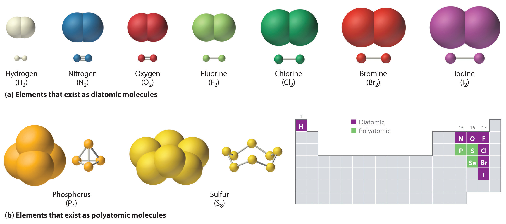
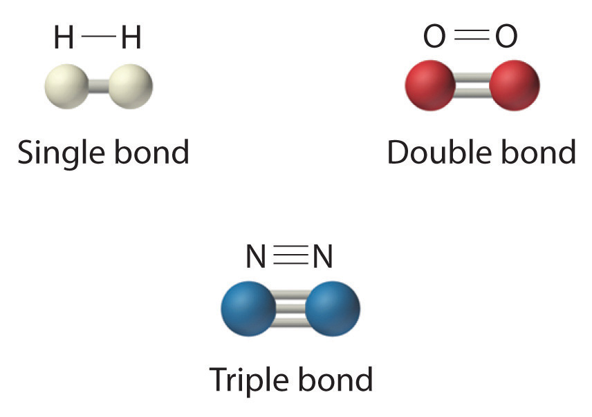
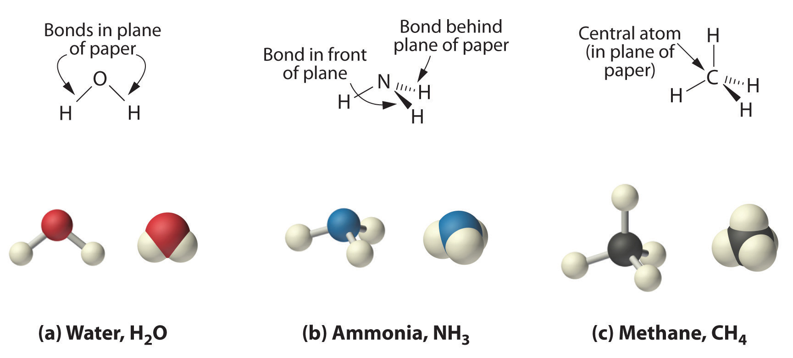
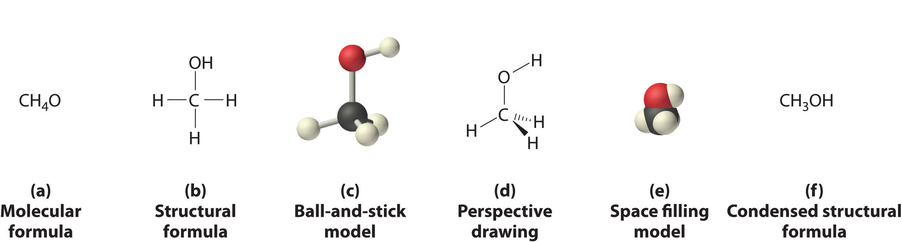
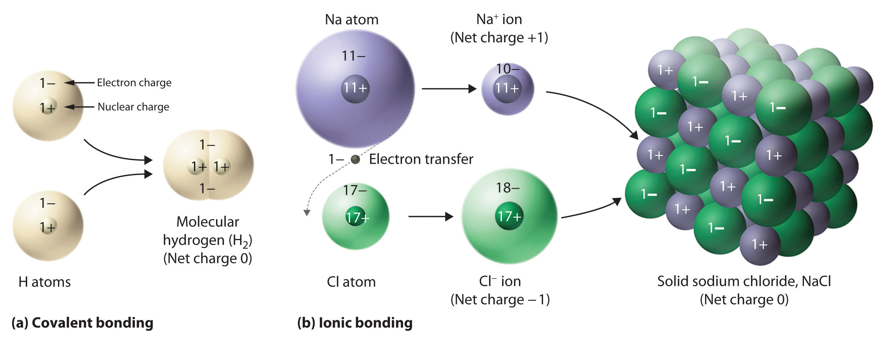
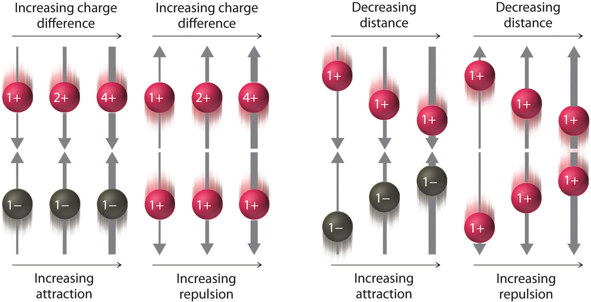
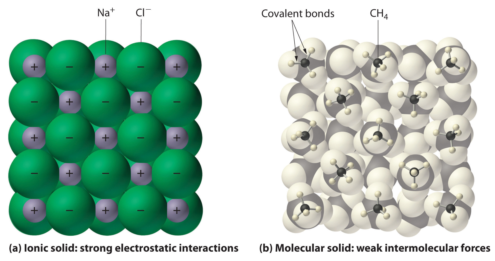
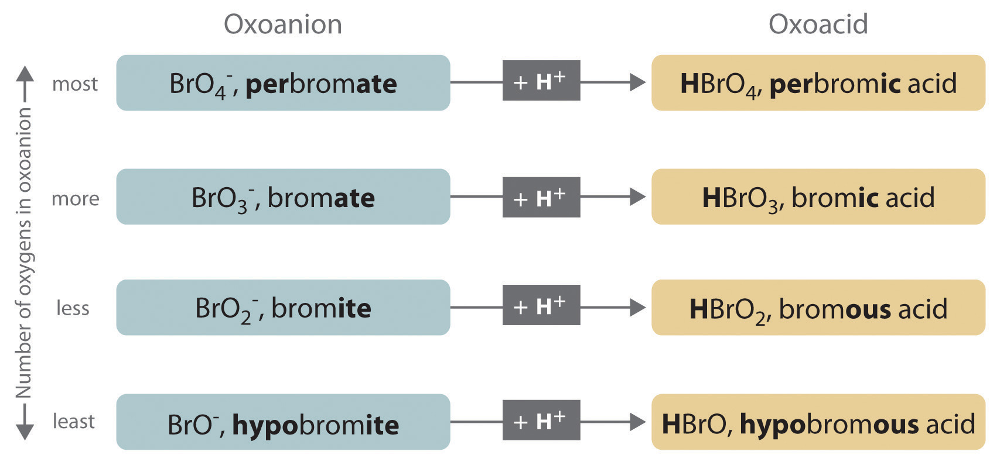
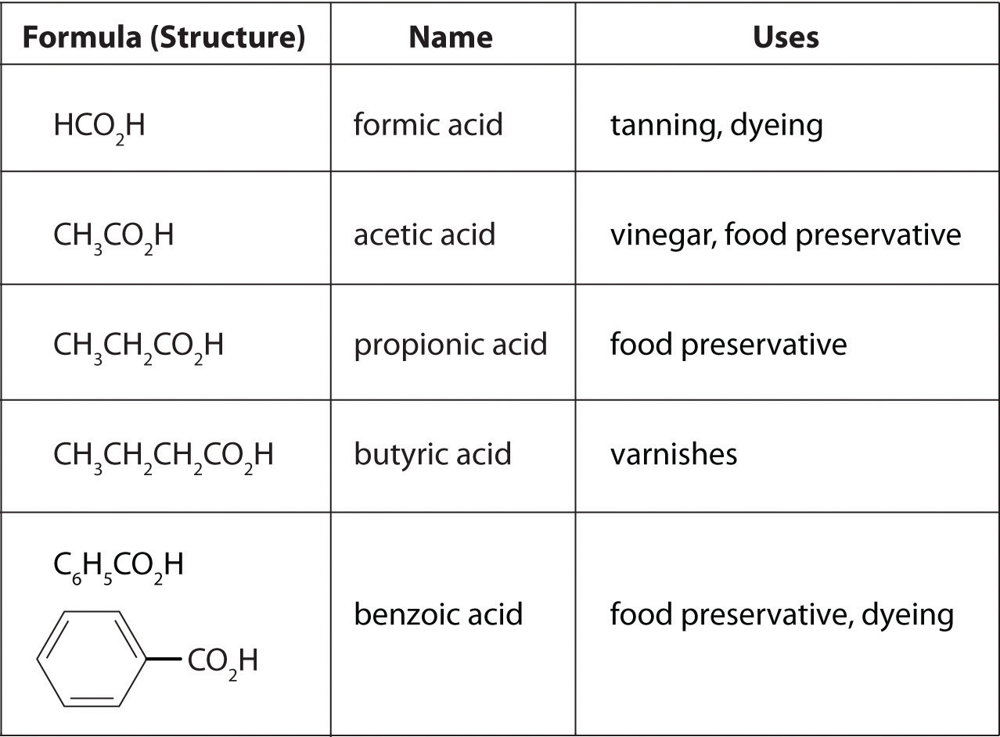

Chapter 1 "Introduction to Chemistry" introduced some of the fundamental concepts of chemistry, with particular attention to the basic properties of atoms and elements. These entities are the building blocks of all substances we encounter, yet most common substances do not consist of only pure elements or individual atoms. Instead, nearly all substances are chemical compounds or mixtures of chemical compounds. Although there are only about 115 elements (of which about 86 occur naturally), millions of chemical compounds are known, with a tremendous range of physical and chemical properties. Consequently, the emphasis of modern chemistry (and this text) is on understanding the relationship between the structures and properties of chemical compounds.
Petroleum refining. Using chemicals, catalysts, heat, and pressure, a petroleum refinery will separate, combine, and rearrange the structure and bonding patterns of the basic carbon-hydrogen molecules found in crude oil. The final products include gasoline, paraffin, diesel fuel, lubricants, and bitumen.
In this chapter, you will learn how to describe the composition of chemical compounds. We introduce you to chemical nomenclature—the language of chemistry—that will enable you to recognize and name the most common kinds of compounds. An understanding of chemical nomenclature not only is essential for your study of chemistry but also has other benefits—for example, it helps you understand the labels on products found in the supermarket and the pharmacy. You will also be better equipped to understand many of the important environmental and medical issues that face society. By the end of this chapter, you will be able to describe what happens chemically when a doctor prepares a cast to stabilize a broken bone, and you will know the composition of common substances such as laundry bleach, the active ingredient in baking powder, and the foul-smelling compound responsible for the odor of spoiled fish. Finally, you will be able to explain the chemical differences among different grades of gasoline.
The atoms in all substances that contain more than one atom are held together by electrostatic interactionsAn interaction between electrically charged particles such as protons and electrons.—interactions between electrically charged particles such as protons and electrons. Electrostatic attractionAn electrostatic interaction between oppositely charged species (positive and negative) that results in a force that causes them to move toward each other. between oppositely charged species (positive and negative) results in a force that causes them to move toward each other, like the attraction between opposite poles of two magnets. In contrast, electrostatic repulsionAn electrostatic interaction between two species that have the same charge (both positive or both negative) that results in a force that causes them to repel each other. between two species with the same charge (either both positive or both negative) results in a force that causes them to repel each other, as do the same poles of two magnets. Atoms form chemical compounds when the attractive electrostatic interactions between them are stronger than the repulsive interactions. Collectively, we refer to the attractive interactions between atoms as chemical bondsAn attractive interaction between atoms that holds them together in compounds..
Chemical bonds are generally divided into two fundamentally different kinds: ionic and covalent. In reality, however, the bonds in most substances are neither purely ionic nor purely covalent, but they are closer to one of these extremes. Although purely ionic and purely covalent bonds represent extreme cases that are seldom encountered in anything but very simple substances, a brief discussion of these two extremes helps us understand why substances that have different kinds of chemical bonds have very different properties. Ionic compoundsA compound consisting of positively charged ions (cations) and negatively charged ions (anions) held together by strong electrostatic forces. consist of positively and negatively charged ions held together by strong electrostatic forces, whereas covalent compoundsA compound that consists of discrete molecules. generally consist of moleculesA group of atoms in which one or more pairs of electrons are shared between bonded atoms., which are groups of atoms in which one or more pairs of electrons are shared between bonded atoms. In a covalent bondThe electrostatic attraction between the positively charged nuclei of the bonded atoms and the negatively charged electrons they share., the atoms are held together by the electrostatic attraction between the positively charged nuclei of the bonded atoms and the negatively charged electrons they share. We begin our discussion of structures and formulas by describing covalent compounds. The energetic factors involved in bond formation are described in more quantitative detail in Chapter 8 "Ionic versus Covalent Bonding".
Ionic compounds consist of ions of opposite charges held together by strong electrostatic forces, whereas pairs of electrons are shared between bonded atoms in covalent compounds.
Just as an atom is the simplest unit that has the fundamental chemical properties of an element, a molecule is the simplest unit that has the fundamental chemical properties of a covalent compound. Some pure elements exist as covalent molecules. Hydrogen, nitrogen, oxygen, and the halogens occur naturally as the diatomic (“two atoms”) molecules H2, N2, O2, F2, Cl2, Br2, and I2 (part (a) in Figure 2.1 "Elements That Exist as Covalent Molecules"). Similarly, a few pure elements are polyatomicMolecules that contain more than two atoms. (“many atoms”) molecules, such as elemental phosphorus and sulfur, which occur as P4 and S8 (part (b) in Figure 2.1 "Elements That Exist as Covalent Molecules").
Each covalent compound is represented by a molecular formulaA representation of a covalent compound that consists of the atomic symbol for each component element (in a prescribed order) accompanied by a subscript indicating the number of atoms of that element in the molecule. The subscript is written only if the number is greater than 1., which gives the atomic symbol for each component element, in a prescribed order, accompanied by a subscript indicating the number of atoms of that element in the molecule. The subscript is written only if the number of atoms is greater than 1. For example, water, with two hydrogen atoms and one oxygen atom per molecule, is written as H2O. Similarly, carbon dioxide, which contains one carbon atom and two oxygen atoms in each molecule, is written as CO2.
Figure 2.1 Elements That Exist as Covalent Molecules
(a) Several elements naturally exist as diatomic molecules, in which two atoms (E) are joined by one or more covalent bonds to form a molecule with the general formula E2. (b) A few elements naturally exist as polyatomic molecules, which contain more than two atoms. For example, phosphorus exists as P4 tetrahedra—regular polyhedra with four triangular sides—with a phosphorus atom at each vertex. Elemental sulfur consists of a puckered ring of eight sulfur atoms connected by single bonds. Selenium is not shown due to the complexity of its structure.
Covalent compounds that contain predominantly carbon and hydrogen are called organic compoundsA covalent compound that contains predominantly carbon and hydrogen.. The convention for representing the formulas of organic compounds is to write carbon first, followed by hydrogen and then any other elements in alphabetical order (e.g., CH4O is methyl alcohol, a fuel). Compounds that consist primarily of elements other than carbon and hydrogen are called inorganic compoundsAn ionic or covalent compound that consists primarily of elements other than carbon and hydrogen.; they include both covalent and ionic compounds. In inorganic compounds, the component elements are listed beginning with the one farthest to the left in the periodic table (see Chapter 32 "Appendix H: Periodic Table of Elements"), such as we see in CO2 or SF6. Those in the same group are listed beginning with the lower element and working up, as in ClF. By convention, however, when an inorganic compound contains both hydrogen and an element from groups 13–15, the hydrogen is usually listed last in the formula. Examples are ammonia (NH3) and silane (SiH4). Compounds such as water, whose compositions were established long before this convention was adopted, are always written with hydrogen first: Water is always written as H2O, not OH2. The conventions for inorganic acids, such as hydrochloric acid (HCl) and sulfuric acid (H2SO4), are described in Section 2.5 "Acids and Bases".
For organic compounds: write C first, then H, and then the other elements in alphabetical order. For molecular inorganic compounds: start with the element at far left in the periodic table; list elements in same group beginning with the lower element and working up.
Write the molecular formula of each compound.
Given: identity of elements present and number of atoms of each
Asked for: molecular formula
Strategy:
A Identify the symbol for each element in the molecule. Then identify the substance as either an organic compound or an inorganic compound.
B If the substance is an organic compound, arrange the elements in order beginning with carbon and hydrogen and then list the other elements alphabetically. If it is an inorganic compound, list the elements beginning with the one farthest left in the periodic table. List elements in the same group starting with the lower element and working up.
C From the information given, add a subscript for each kind of atom to write the molecular formula.
Solution:
A Freon-11 contains carbon, chlorine, and fluorine. It can be viewed as either an inorganic compound or an organic compound (in which fluorine has replaced hydrogen). The formula for Freon-11 can therefore be written using either of the two conventions.
B According to the convention for inorganic compounds, carbon is written first because it is farther left in the periodic table. Fluorine and chlorine are in the same group, so they are listed beginning with the lower element and working up: CClF. Adding subscripts gives the molecular formula CCl3F.
C We obtain the same formula for Freon-11 using the convention for organic compounds. The number of carbon atoms is written first, followed by the number of hydrogen atoms (zero) and then the other elements in alphabetical order, also giving CCl3F.
Exercise
Write the molecular formula for each compound.
Answer:
Molecular formulas give only the elemental composition of molecules. In contrast, structural formulasA representation of a molecule that shows which atoms are bonded to one another and, in some cases, the approximate arrangement of atoms in space. show which atoms are bonded to one another and, in some cases, the approximate arrangement of the atoms in space. Knowing the structural formula of a compound enables chemists to create a three-dimensional model, which provides information about how that compound will behave physically and chemically.
The structural formula for H2 can be drawn as H–H and that for I2 as I–I, where the line indicates a single pair of shared electrons, a single bondA chemical bond formed when two atoms share a single pair of electrons.. Two pairs of electrons are shared in a double bondA chemical bond formed when two atoms share two pairs of electrons., which is indicated by two lines— for example, O2 is O=O. Three electron pairs are shared in a triple bondA chemical bond formed when two atoms share three pairs of electrons., which is indicated by three lines—for example, N2 is N≡N (see Figure 2.2 "Molecules That Contain Single, Double, and Triple Bonds"). Carbon is unique in the extent to which it forms single, double, and triple bonds to itself and other elements. The number of bonds formed by an atom in its covalent compounds is not arbitrary. As you will learn in Chapter 8 "Ionic versus Covalent Bonding", hydrogen, oxygen, nitrogen, and carbon have a very strong tendency to form substances in which they have one, two, three, and four bonds to other atoms, respectively (Table 2.1 "The Number of Bonds That Selected Atoms Commonly Form to Other Atoms").
Figure 2.2 Molecules That Contain Single, Double, and Triple Bonds
Hydrogen (H2) has a single bond between atoms. Oxygen (O2) has a double bond between atoms, indicated by two lines (=). Nitrogen (N2) has a triple bond between atoms, indicated by three lines (≡). Each bond represents an electron pair.
Table 2.1 The Number of Bonds That Selected Atoms Commonly Form to Other Atoms
| Atom | Number of Bonds |
|---|---|
| H (group 1) | 1 |
| O (group 16) | 2 |
| N (group 15) | 3 |
| C (group 14) | 4 |
The structural formula for water can be drawn as follows:

Because the latter approximates the experimentally determined shape of the water molecule, it is more informative. Similarly, ammonia (NH3) and methane (CH4) are often written as planar molecules:
As shown in Figure 2.3 "The Three-Dimensional Structures of Water, Ammonia, and Methane", however, the actual three-dimensional structure of NH3 looks like a pyramid with a triangular base of three hydrogen atoms. The structure of CH4, with four hydrogen atoms arranged around a central carbon atom as shown in Figure 2.3 "The Three-Dimensional Structures of Water, Ammonia, and Methane", is tetrahedral. That is, the hydrogen atoms are positioned at every other vertex of a cube. Many compounds—carbon compounds, in particular—have four bonded atoms arranged around a central atom to form a tetrahedron.
Figure 2.3 The Three-Dimensional Structures of Water, Ammonia, and Methane
(a) Water is a V-shaped molecule, in which all three atoms lie in a plane. (b) In contrast, ammonia has a pyramidal structure, in which the three hydrogen atoms form the base of the pyramid and the nitrogen atom is at the vertex. (c) The four hydrogen atoms of methane form a tetrahedron; the carbon atom lies in the center.
CH4. Methane has a three-dimensional, tetrahedral structure.
Figure 2.1 "Elements That Exist as Covalent Molecules", Figure 2.2 "Molecules That Contain Single, Double, and Triple Bonds", and Figure 2.3 "The Three-Dimensional Structures of Water, Ammonia, and Methane" illustrate different ways to represent the structures of molecules. It should be clear that there is no single “best” way to draw the structure of a molecule; the method you use depends on which aspect of the structure you want to emphasize and how much time and effort you want to spend. Figure 2.4 "Different Ways of Representing the Structure of a Molecule" shows some of the different ways to portray the structure of a slightly more complex molecule: methanol. These representations differ greatly in their information content. For example, the molecular formula for methanol (part (a) in Figure 2.4 "Different Ways of Representing the Structure of a Molecule") gives only the number of each kind of atom; writing methanol as CH4O tells nothing about its structure. In contrast, the structural formula (part (b) in Figure 2.4 "Different Ways of Representing the Structure of a Molecule") indicates how the atoms are connected, but it makes methanol look as if it is planar (which it is not). Both the ball-and-stick model (part (c) in Figure 2.4 "Different Ways of Representing the Structure of a Molecule") and the perspective drawing (part (d) in Figure 2.4 "Different Ways of Representing the Structure of a Molecule") show the three-dimensional structure of the molecule. The latter (also called a wedge-and-dash representation) is the easiest way to sketch the structure of a molecule in three dimensions. It shows which atoms are above and below the plane of the paper by using wedges and dashes, respectively; the central atom is always assumed to be in the plane of the paper. The space-filling model (part (e) in Figure 2.4 "Different Ways of Representing the Structure of a Molecule") illustrates the approximate relative sizes of the atoms in the molecule, but it does not show the bonds between the atoms. Also, in a space-filling model, atoms at the “front” of the molecule may obscure atoms at the “back.”
Figure 2.4 Different Ways of Representing the Structure of a Molecule
(a) The molecular formula for methanol gives only the number of each kind of atom present. (b) The structural formula shows which atoms are connected. (c) The ball-and-stick model shows the atoms as spheres and the bonds as sticks. (d) A perspective drawing (also called a wedge-and-dash representation) attempts to show the three-dimensional structure of the molecule. (e) The space-filling model shows the atoms in the molecule but not the bonds. (f) The condensed structural formula is by far the easiest and most common way to represent a molecule.
Although a structural formula, a ball-and-stick model, a perspective drawing, and a space-filling model provide a significant amount of information about the structure of a molecule, each requires time and effort. Consequently, chemists often use a condensed structural formula (part (f) in Figure 2.4 "Different Ways of Representing the Structure of a Molecule"), which omits the lines representing bonds between atoms and simply lists the atoms bonded to a given atom next to it. Multiple groups attached to the same atom are shown in parentheses, followed by a subscript that indicates the number of such groups. For example, the condensed structural formula for methanol is CH3OH, which tells us that the molecule contains a CH3 unit that looks like a fragment of methane (CH4). Methanol can therefore be viewed either as a methane molecule in which one hydrogen atom has been replaced by an –OH group or as a water molecule in which one hydrogen atom has been replaced by a –CH3 fragment. Because of their ease of use and information content, we use condensed structural formulas for molecules throughout this text. Ball-and-stick models are used when needed to illustrate the three-dimensional structure of molecules, and space-filling models are used only when it is necessary to visualize the relative sizes of atoms or molecules to understand an important point.
Write the molecular formula for each compound. The condensed structural formula is given.
Given: condensed structural formula
Asked for: molecular formula
Strategy:
A Identify every element in the condensed structural formula and then determine whether the compound is organic or inorganic.
B As appropriate, use either organic or inorganic convention to list the elements. Then add appropriate subscripts to indicate the number of atoms of each element present in the molecular formula.
Solution:
The molecular formula lists the elements in the molecule and the number of atoms of each.
Exercise
Write the molecular formula for each molecule.
Answer:
The substances described in the preceding discussion are composed of molecules that are electrically neutral; that is, the number of positively charged protons in the nucleus is equal to the number of negatively charged electrons. In contrast, ions are atoms or assemblies of atoms that have a net electrical charge. Ions that contain fewer electrons than protons have a net positive charge and are called cationsAn ion that has fewer electrons than protons, resulting in a net positive charge.. Conversely, ions that contain more electrons than protons have a net negative charge and are called anionsAn ion that has fewer protons than electrons, resulting in a net negative charge.. Ionic compounds contain both cations and anions in a ratio that results in no net electrical charge.
Ionic compounds contain both cations and anions in a ratio that results in zero electrical charge.
In covalent compounds, electrons are shared between bonded atoms and are simultaneously attracted to more than one nucleus. In contrast, ionic compounds contain cations and anions rather than discrete neutral molecules. Ionic compounds are held together by the attractive electrostatic interactions between cations and anions. In an ionic compound, the cations and anions are arranged in space to form an extended three-dimensional array that maximizes the number of attractive electrostatic interactions and minimizes the number of repulsive electrostatic interactions (Figure 2.5 "Covalent and Ionic Bonding"). As shown in Equation 2.1, the electrostatic energy of the interaction between two charged particles is proportional to the product of the charges on the particles and inversely proportional to the distance between them:
Equation 2.1
where Q1 and Q2 are the electrical charges on particles 1 and 2, and r is the distance between them. When Q1 and Q2 are both positive, corresponding to the charges on cations, the cations repel each other and the electrostatic energy is positive. When Q1 and Q2 are both negative, corresponding to the charges on anions, the anions repel each other and the electrostatic energy is again positive. The electrostatic energy is negative only when the charges have opposite signs; that is, positively charged species are attracted to negatively charged species and vice versa. As shown in Figure 2.6 "The Effect of Charge and Distance on the Strength of Electrostatic Interactions", the strength of the interaction is proportional to the magnitude of the charges and decreases as the distance between the particles increases. We will return to these energetic factors in Chapter 8 "Ionic versus Covalent Bonding", where they are described in greater quantitative detail.
If the electrostatic energy is positive, the particles repel each other; if the electrostatic energy is negative, the particles are attracted to each other.
Figure 2.5 Covalent and Ionic Bonding
(a) In molecular hydrogen (H2), two hydrogen atoms share two electrons to form a covalent bond. (b) The ionic compound NaCl forms when electrons from sodium atoms are transferred to chlorine atoms. The resulting Na+ and Cl− ions form a three-dimensional solid that is held together by attractive electrostatic interactions.
Figure 2.6 The Effect of Charge and Distance on the Strength of Electrostatic Interactions
As the charge on ions increases or the distance between ions decreases, so does the strength of the attractive (−…+) or repulsive (−…− or +…+) interactions. The strength of these interactions is represented by the thickness of the arrows.
One example of an ionic compound is sodium chloride (NaCl; Figure 2.7 "Sodium Chloride: an Ionic Solid"), formed from sodium and chlorine. In forming chemical compounds, many elements have a tendency to gain or lose enough electrons to attain the same number of electrons as the noble gas closest to them in the periodic table. When sodium and chlorine come into contact, each sodium atom gives up an electron to become a Na+ ion, with 11 protons in its nucleus but only 10 electrons (like neon), and each chlorine atom gains an electron to become a Cl− ion, with 17 protons in its nucleus and 18 electrons (like argon), as shown in part (b) in Figure 2.5 "Covalent and Ionic Bonding". Solid sodium chloride contains equal numbers of cations (Na+) and anions (Cl−), thus maintaining electrical neutrality. Each Na+ ion is surrounded by 6 Cl− ions, and each Cl− ion is surrounded by 6 Na+ ions. Because of the large number of attractive Na+Cl− interactions, the total attractive electrostatic energy in NaCl is great.
Figure 2.7 Sodium Chloride: an Ionic Solid

The planes of an NaCl crystal reflect the regular three-dimensional arrangement of its Na+ (purple) and Cl− (green) ions.
Consistent with a tendency to have the same number of electrons as the nearest noble gas, when forming ions, elements in groups 1, 2, and 3 tend to lose one, two, and three electrons, respectively, to form cations, such as Na+ and Mg2+. They then have the same number of electrons as the nearest noble gas: neon. Similarly, K+, Ca2+, and Sc3+ have 18 electrons each, like the nearest noble gas: argon. In addition, the elements in group 13 lose three electrons to form cations, such as Al3+, again attaining the same number of electrons as the noble gas closest to them in the periodic table. Because the lanthanides and actinides formally belong to group 3, the most common ion formed by these elements is M3+, where M represents the metal. Conversely, elements in groups 17, 16, and 15 often react to gain one, two, and three electrons, respectively, to form ions such as Cl−, S2−, and P3−. Ions such as these, which contain only a single atom, are called monatomic ionsAn ion with only a single atom.. You can predict the charges of most monatomic ions derived from the main group elements by simply looking at the periodic table and counting how many columns an element lies from the extreme left or right. For example, you can predict that barium (in group 2) will form Ba2+ to have the same number of electrons as its nearest noble gas, xenon, that oxygen (in group 16) will form O2− to have the same number of electrons as neon, and cesium (in group 1) will form Cs+ to also have the same number of electrons as xenon. Note that this method does not usually work for most of the transition metals, as you will learn in Section 2.3 "Naming Ionic Compounds". Some common monatomic ions are in Table 2.2 "Some Common Monatomic Ions and Their Names".
Elements in groups 1, 2, and 3 tend to form 1+, 2+, and 3+ ions, respectively; elements in groups 15, 16, and 17 tend to form 3−, 2−, and 1− ions, respectively.
Table 2.2 Some Common Monatomic Ions and Their Names
| Group 1 | Group 2 | Group 3 | Group 13 | Group 15 | Group 16 | Group 17 |
|---|---|---|---|---|---|---|
|
Li+ lithium |
Be2+ beryllium |
N3− nitride (azide) |
O2− oxide |
F− fluoride |
||
|
Na+ sodium |
Mg2+ magnesium |
Al3+ aluminum |
P3− phosphide |
S2− sulfide |
Cl− chloride |
|
|
K+ potassium |
Ca2+ calcium |
Sc3+ scandium |
Ga3+ gallium |
As3− arsenide |
Se2− selenide |
Br− bromide |
|
Rb+ rubidium |
Sr2+ strontium |
Y3+ yttrium |
In3+ indium |
Te2− telluride |
I− iodide |
|
|
Cs+ cesium |
Ba2+ barium |
La3+ lanthanum |
Predict the charge on the most common monatomic ion formed by each element.
Given: element
Asked for: ionic charge
Strategy:
A Identify the group in the periodic table to which the element belongs. Based on its location in the periodic table, decide whether the element is a metal, which tends to lose electrons; a nonmetal, which tends to gain electrons; or a semimetal, which can do either.
B After locating the noble gas that is closest to the element, determine the number of electrons the element must gain or lose to have the same number of electrons as the nearest noble gas.
Solution:
Exercise
Predict the charge on the most common monatomic ion formed by each element.
Answer:
In general, ionic and covalent compounds have different physical properties. Ionic compounds usually form hard crystalline solids that melt at rather high temperatures and are very resistant to evaporation. These properties stem from the characteristic internal structure of an ionic solid, illustrated schematically in part (a) in Figure 2.8 "Interactions in Ionic and Covalent Solids", which shows the three-dimensional array of alternating positive and negative ions held together by strong electrostatic attractions. In contrast, as shown in part (b) in Figure 2.8 "Interactions in Ionic and Covalent Solids", most covalent compounds consist of discrete molecules held together by comparatively weak intermolecular forces (the forces between molecules), even though the atoms within each molecule are held together by strong intramolecular covalent bonds (the forces within the molecule). Covalent substances can be gases, liquids, or solids at room temperature and pressure, depending on the strength of the intermolecular interactions. Covalent molecular solids tend to form soft crystals that melt at rather low temperatures and evaporate relatively easily.Some covalent substances, however, are not molecular but consist of infinite three-dimensional arrays of covalently bonded atoms and include some of the hardest materials known, such as diamond. This topic will be addressed in Chapter 12 "Solids". The covalent bonds that hold the atoms together in the molecules are unaffected when covalent substances melt or evaporate, so a liquid or vapor of discrete, independent molecules is formed. For example, at room temperature, methane, the major constituent of natural gas, is a gas that is composed of discrete CH4 molecules. A comparison of the different physical properties of ionic compounds and covalent molecular substances is given in Table 2.3 "The Physical Properties of Typical Ionic Compounds and Covalent Molecular Substances".
Table 2.3 The Physical Properties of Typical Ionic Compounds and Covalent Molecular Substances
| Ionic Compounds | Covalent Molecular Substances |
|---|---|
| hard solids | gases, liquids, or soft solids |
| high melting points | low melting points |
| nonvolatile | volatile |
Figure 2.8 Interactions in Ionic and Covalent Solids
(a) The positively and negatively charged ions in an ionic solid such as sodium chloride (NaCl) are held together by strong electrostatic interactions. (b) In this representation of the packing of methane (CH4) molecules in solid methane, a prototypical molecular solid, the methane molecules are held together in the solid only by relatively weak intermolecular forces, even though the atoms within each methane molecule are held together by strong covalent bonds.
The atoms in chemical compounds are held together by attractive electrostatic interactions known as chemical bonds. Ionic compounds contain positively and negatively charged ions in a ratio that results in an overall charge of zero. The ions are held together in a regular spatial arrangement by electrostatic forces. Most covalent compounds consist of molecules, groups of atoms in which one or more pairs of electrons are shared by at least two atoms to form a covalent bond. The atoms in molecules are held together by the electrostatic attraction between the positively charged nuclei of the bonded atoms and the negatively charged electrons shared by the nuclei. The molecular formula of a covalent compound gives the types and numbers of atoms present. Compounds that contain predominantly carbon and hydrogen are called organic compounds, whereas compounds that consist primarily of elements other than carbon and hydrogen are inorganic compounds. Diatomic molecules contain two atoms, and polyatomic molecules contain more than two. A structural formula indicates the composition and approximate structure and shape of a molecule. Single bonds, double bonds, and triple bonds are covalent bonds in which one, two, and three pairs of electrons, respectively, are shared between two bonded atoms. Atoms or groups of atoms that possess a net electrical charge are called ions; they can have either a positive charge (cations) or a negative charge (anions). Ions can consist of one atom (monatomic ions) or several (polyatomic ions). The charges on monatomic ions of most main group elements can be predicted from the location of the element in the periodic table. Ionic compounds usually form hard crystalline solids with high melting points. Covalent molecular compounds, in contrast, consist of discrete molecules held together by weak intermolecular forces and can be gases, liquids, or solids at room temperature and pressure.
Ionic and covalent compounds are held together by electrostatic attractions between oppositely charged particles. Describe the differences in the nature of the attractions in ionic and covalent compounds. Which class of compounds contains pairs of electrons shared between bonded atoms?
Which contains fewer electrons than the neutral atom—the corresponding cation or the anion?
What is the difference between an organic compound and an inorganic compound?
What is the advantage of writing a structural formula as a condensed formula?
The majority of elements that exist as diatomic molecules are found in one group of the periodic table. Identify the group.
Discuss the differences between covalent and ionic compounds with regard to
Why do covalent compounds generally tend to have lower melting points than ionic compounds?
Covalent compounds generally melt at lower temperatures than ionic compounds because the intermolecular interactions that hold the molecules together in a molecular solid are weaker than the electrostatic attractions that hold oppositely charged ions together in an ionic solid.
The structural formula for chloroform (CHCl3) was shown in Example 2. Based on this information, draw the structural formula of dichloromethane (CH2Cl2).
What is the total number of electrons present in each ion?
What is the total number of electrons present in each ion?
Predict how many electrons are in each ion.
Predict how many electrons are in each ion.
Predict the charge on the most common monatomic ion formed by each element.
Predict the charge on the most common monatomic ion formed by each element.
For each representation of a monatomic ion, identify the parent atom, write the formula of the ion using an appropriate superscript, and indicate the period and group of the periodic table in which the element is found.
For each representation of a monatomic ion, identify the parent atom, write the formula of the ion using an appropriate superscript, and indicate the period and group of the periodic table in which the element is found.
When chemists synthesize a new compound, they may not yet know its molecular or structural formula. In such cases, they usually begin by determining its empirical formulaA formula for a compound that consists of the atomic symbol for each component element accompanied by a subscript indicating the relative number of atoms of that element in the compound, reduced to the smallest whole numbers., the relative numbers of atoms of the elements in a compound, reduced to the smallest whole numbers. Because the empirical formula is based on experimental measurements of the numbers of atoms in a sample of the compound, it shows only the ratios of the numbers of the elements present. The difference between empirical and molecular formulas can be illustrated with butane, a covalent compound used as the fuel in disposable lighters. The molecular formula for butane is C4H10. The ratio of carbon atoms to hydrogen atoms in butane is 4:10, which can be reduced to 2:5. The empirical formula for butane is therefore C2H5. The formula unitThe absolute grouping of atoms or ions represented by the empirical formula. is the absolute grouping of atoms or ions represented by the empirical formula of a compound, either ionic or covalent. Butane, for example, has the empirical formula C2H5, but it contains two C2H5 formula units, giving a molecular formula of C4H10.
Because ionic compounds do not contain discrete molecules, empirical formulas are used to indicate their compositions. All compounds, whether ionic or covalent, must be electrically neutral. Consequently, the positive and negative charges in a formula unit must exactly cancel each other. If the cation and the anion have charges of equal magnitude, such as Na+ and Cl−, then the compound must have a 1:1 ratio of cations to anions, and the empirical formula must be NaCl. If the charges are not the same magnitude, then a cation:anion ratio other than 1:1 is needed to produce a neutral compound. In the case of Mg2+ and Cl−, for example, two Cl− ions are needed to balance the two positive charges on each Mg2+ ion, giving an empirical formula of MgCl2. Similarly, the formula for the ionic compound that contains Na+ and O2− ions is Na2O.
Ionic compounds do not contain discrete molecules, so empirical formulas are used to indicate their compositions.
An ionic compound that contains only two elements, one present as a cation and one as an anion, is called a binary ionic compoundAn ionic compound that contains only two elements, one present as a cation and one as an anion.. One example is MgCl2, a coagulant used in the preparation of tofu from soybeans. For binary ionic compounds, the subscripts in the empirical formula can also be obtained by crossing charges: use the absolute value of the charge on one ion as the subscript for the other ion. This method is shown schematically as follows:

Crossing charges. One method for obtaining subscripts in the empirical formula is by crossing charges.
When crossing charges, you will sometimes find it necessary to reduce the subscripts to their simplest ratio to write the empirical formula. Consider, for example, the compound formed by Mg2+ and O2−. Using the absolute values of the charges on the ions as subscripts gives the formula Mg2O2:

This simplifies to its correct empirical formula MgO. The empirical formula has one Mg2+ ion and one O2− ion.
Write the empirical formula for the simplest binary ionic compound formed from each ion or element pair.
Given: ions or elements
Asked for: empirical formula for binary ionic compound
Strategy:
A If not given, determine the ionic charges based on the location of the elements in the periodic table.
B Use the absolute value of the charge on each ion as the subscript for the other ion. Reduce the subscripts to the lowest numbers to write the empirical formula. Check to make sure the empirical formula is electrically neutral.
Solution:
B Using the absolute values of the charges on the ions as the subscripts gives Ga3As3:

Reducing the subscripts to the smallest whole numbers gives the empirical formula GaAs, which is electrically neutral [+3 + (−3) = 0]. Alternatively, we could recognize that Ga3+ and As3− have charges of equal magnitude but opposite signs. One Ga3+ ion balances the charge on one As3− ion, and a 1:1 compound will have no net charge. Because we write subscripts only if the number is greater than 1, the empirical formula is GaAs. GaAs is gallium arsenide, which is widely used in the electronics industry in transistors and other devices.
B Because Eu3+ has a charge of +3 and O2− has a charge of −2, a 1:1 compound would have a net charge of +1. We must therefore find multiples of the charges that cancel. We cross charges, using the absolute value of the charge on one ion as the subscript for the other ion:

The subscript for Eu3+ is 2 (from O2−), and the subscript for O2− is 3 (from Eu3+), giving Eu2O3; the subscripts cannot be reduced further. The empirical formula contains a positive charge of 2(+3) = +6 and a negative charge of 3(−2) = −6, for a net charge of 0. The compound Eu2O3 is neutral. Europium oxide is responsible for the red color in television and computer screens.
A Because the charges on the ions are not given, we must first determine the charges expected for the most common ions derived from calcium and chlorine. Calcium lies in group 2, so it should lose two electrons to form Ca2+. Chlorine lies in group 17, so it should gain one electron to form Cl−.
B Two Cl− ions are needed to balance the charge on one Ca2+ ion, which leads to the empirical formula CaCl2. We could also cross charges, using the absolute value of the charge on Ca2+ as the subscript for Cl and the absolute value of the charge on Cl− as the subscript for Ca:

The subscripts in CaCl2 cannot be reduced further. The empirical formula is electrically neutral [+2 + 2(−1) = 0]. This compound is calcium chloride, one of the substances used as “salt” to melt ice on roads and sidewalks in winter.
Exercise
Write the empirical formula for the simplest binary ionic compound formed from each ion or element pair.
Answer:
Polyatomic ionsA group of two or more atoms that has a net electrical charge. are groups of atoms that bear a net electrical charge, although the atoms in a polyatomic ion are held together by the same covalent bonds that hold atoms together in molecules. Just as there are many more kinds of molecules than simple elements, there are many more kinds of polyatomic ions than monatomic ions. Two examples of polyatomic cations are the ammonium (NH4+) and the methylammonium (CH3NH3+) ions. Polyatomic anions are much more numerous than polyatomic cations; some common examples are in Table 2.4 "Common Polyatomic Ions and Their Names".
Table 2.4 Common Polyatomic Ions and Their Names
| Formula | Name of Ion |
|---|---|
| NH4+ | ammonium |
| CH3NH3+ | methylammonium |
| OH− | hydroxide |
| O22− | peroxide |
| CN− | cyanide |
| SCN− | thiocyanate |
| NO2− | nitrite |
| NO3− | nitrate |
| CO32− | carbonate |
| HCO3− | hydrogen carbonate, or bicarbonate |
| SO32− | sulfite |
| SO42− | sulfate |
| HSO4− | hydrogen sulfate, or bisulfate |
| PO43− | phosphate |
| HPO42− | hydrogen phosphate |
| H2PO4− | dihydrogen phosphate |
| ClO− | hypochlorite |
| ClO2− | chlorite |
| ClO3− | chlorate |
| ClO4− | perchlorate |
| MnO4− | permanganate |
| CrO42− | chromate |
| Cr2O72− | dichromate |
| C2O42− | oxalate |
| HCO2− | formate |
| CH3CO2− | acetate |
| C6H5CO2− | benzoate |
The method we used to predict the empirical formulas for ionic compounds that contain monatomic ions can also be used for compounds that contain polyatomic ions. The overall charge on the cations must balance the overall charge on the anions in the formula unit. Thus K+ and NO3− ions combine in a 1:1 ratio to form KNO3 (potassium nitrate or saltpeter), a major ingredient in black gunpowder. Similarly, Ca2+ and SO42− form CaSO4 (calcium sulfate), which combines with varying amounts of water to form gypsum and plaster of Paris. The polyatomic ions NH4+ and NO3− form NH4NO3 (ammonium nitrate), which is a widely used fertilizer and, in the wrong hands, an explosive. One example of a compound in which the ions have charges of different magnitudes is calcium phosphate, which is composed of Ca2+ and PO43− ions; it is a major component of bones. The compound is electrically neutral because the ions combine in a ratio of three Ca2+ ions [3(+2) = +6] for every two ions [2(−3) = −6], giving an empirical formula of Ca3(PO4)2; the parentheses around PO4 in the empirical formula indicate that it is a polyatomic ion. Writing the formula for calcium phosphate as Ca3P2O8 gives the correct number of each atom in the formula unit, but it obscures the fact that the compound contains readily identifiable PO43− ions.
Write the empirical formula for the compound formed from each ion pair.
Given: ions
Asked for: empirical formula for ionic compound
Strategy:
A If it is not given, determine the charge on a monatomic ion from its location in the periodic table. Use Table 2.4 "Common Polyatomic Ions and Their Names" to find the charge on a polyatomic ion.
B Use the absolute value of the charge on each ion as the subscript for the other ion. Reduce the subscripts to the smallest whole numbers when writing the empirical formula.
Solution:
Exercise
Write the empirical formula for the compound formed from each ion pair.
Answer:
Many ionic compounds occur as hydratesA compound that contains specific ratios of loosely bound water molecules, called waters of hydration., compounds that contain specific ratios of loosely bound water molecules, called waters of hydrationThe loosely bound water molecules in hydrate compounds. These waters of hydration can often be removed by simply heating the compound.. Waters of hydration can often be removed simply by heating. For example, calcium dihydrogen phosphate can form a solid that contains one molecule of water per Ca(H2PO4)2 unit and is used as a leavening agent in the food industry to cause baked goods to rise. The empirical formula for the solid is Ca(H2PO4)2·H2O. In contrast, copper sulfate usually forms a blue solid that contains five waters of hydration per formula unit, with the empirical formula CuSO4·5H2O. When heated, all five water molecules are lost, giving a white solid with the empirical formula CuSO4 (Figure 2.9 "Loss of Water from a Hydrate with Heating").
Figure 2.9 Loss of Water from a Hydrate with Heating

When blue CuSO4·5H2O is heated, two molecules of water are lost at 30°C, two more at 110°C, and the last at 250°C to give white CuSO4.
Compounds that differ only in the numbers of waters of hydration can have very different properties. For example, CaSO4·½H2O is plaster of Paris, which was often used to make sturdy casts for broken arms or legs, whereas CaSO4·2H2O is the less dense, flakier gypsum, a mineral used in drywall panels for home construction. When a cast would set, a mixture of plaster of Paris and water crystallized to give solid CaSO4·2H2O. Similar processes are used in the setting of cement and concrete.
An empirical formula gives the relative numbers of atoms of the elements in a compound, reduced to the lowest whole numbers. The formula unit is the absolute grouping represented by the empirical formula of a compound, either ionic or covalent. Empirical formulas are particularly useful for describing the composition of ionic compounds, which do not contain readily identifiable molecules. Some ionic compounds occur as hydrates, which contain specific ratios of loosely bound water molecules called waters of hydration.
What are the differences and similarities between a polyatomic ion and a molecule?
Classify each compound as ionic or covalent.
Classify each compound as ionic or covalent. Which are organic compounds and which are inorganic compounds?
Generally, one cannot determine the molecular formula directly from an empirical formula. What other information is needed?
Give two pieces of information that we obtain from a structural formula that we cannot obtain from an empirical formula.
The formulas of alcohols are often written as ROH rather than as empirical formulas. For example, methanol is generally written as CH3OH rather than CH4O. Explain why the ROH notation is preferred.
The compound dimethyl sulfide has the empirical formula C2H6S and the structural formula CH3SCH3. What information do we obtain from the structural formula that we do not get from the empirical formula? Write the condensed structural formula for the compound.
What is the correct formula for magnesium hydroxide—MgOH2 or Mg(OH)2? Why?
Magnesium cyanide is written as Mg(CN)2, not MgCN2. Why?
Does a given hydrate always contain the same number of waters of hydration?
The structural formula gives us the connectivity of the atoms in the molecule or ion, as well as a schematic representation of their arrangement in space. Empirical formulas tell us only the ratios of the atoms present. The condensed structural formula of dimethylsulfide is (CH3)2S.
Write the formula for each compound.
Write the formula for each compound.
Complete the following table by filling in the formula for the ionic compound formed by each cation-anion pair.
| Ion | K+ | Fe3+ | NH4+ | Ba2+ |
|---|---|---|---|---|
| Cl− | KCl | |||
| SO42− | ||||
| PO43− | ||||
| NO3− | ||||
| OH− |
Write the empirical formula for the binary compound formed by the most common monatomic ions formed by each pair of elements.
Write the empirical formula for the binary compound formed by the most common monatomic ions formed by each pair of elements.
Write the empirical formula for each compound.
Write the empirical formula for each compound.
| Ion | K + | Fe 3+ | NH 4 + | Ba 2+ |
|---|---|---|---|---|
| Cl − | KCl | FeCl3 | NH4Cl | BaCl2 |
| SO 4 2− | K2SO4 | Fe2(SO4)3 | (NH4)2SO4 | BaSO4 |
| PO 4 3− | K3PO4 | FePO4 | (NH4)3PO4 | Ba3(PO4)2 |
| NO 3 − | KNO3 | Fe(NO3)3 | NH4NO3 | Ba(NO3)2 |
| OH − | KOH | Fe(OH)3 | NH4OH | Ba(OH)2 |
The empirical and molecular formulas discussed in the preceding section are precise and highly informative, but they have some disadvantages. First, they are inconvenient for routine verbal communication. For example, saying “C-A-three-P-O-four-two” for Ca3(PO4)2 is much more difficult than saying “calcium phosphate.” In addition, you will see in Section 2.4 "Naming Covalent Compounds" that many compounds have the same empirical and molecular formulas but different arrangements of atoms, which result in very different chemical and physical properties. In such cases, it is necessary for the compounds to have different names that distinguish among the possible arrangements.
Many compounds, particularly those that have been known for a relatively long time, have more than one name: a common name (sometimes more than one) and a systematic name, which is the name assigned by adhering to specific rules. Like the names of most elements, the common names of chemical compounds generally have historical origins, although they often appear to be unrelated to the compounds of interest. For example, the systematic name for KNO3 is potassium nitrate, but its common name is saltpeter.
In this text, we use a systematic nomenclature to assign meaningful names to the millions of known substances. Unfortunately, some chemicals that are widely used in commerce and industry are still known almost exclusively by their common names; in such cases, you must be familiar with the common name as well as the systematic one. The objective of this and the next two sections is to teach you to write the formula for a simple inorganic compound from its name—and vice versa—and introduce you to some of the more frequently encountered common names.
We begin with binary ionic compounds, which contain only two elements. The procedure for naming such compounds is outlined in Figure 2.10 "Naming an Ionic Compound" and uses the following steps:
Figure 2.10 Naming an Ionic Compound

Name the cation.
Metals that form more than one cation. As shown in Figure 2.11 "Metals That Form More Than One Cation and Their Locations in the Periodic Table", many metals can form more than one cation. This behavior is observed for most transition metals, many actinides, and the heaviest elements of groups 13–15. In such cases, the positive charge on the metal is indicated by a roman numeral in parentheses immediately following the name of the metal. Thus Cu+ is copper(I) (read as “copper one”), Fe2+ is iron(II), Fe3+ is iron(III), Sn2+ is tin(II), and Sn4+ is tin(IV).
An older system of nomenclature for such cations is still widely used, however. The name of the cation with the higher charge is formed from the root of the element’s Latin name with the suffix -ic attached, and the name of the cation with the lower charge has the same root with the suffix -ous. The names of Fe3+, Fe2+, Sn4+, and Sn2+ are therefore ferric, ferrous, stannic, and stannous, respectively. Even though this text uses the systematic names with roman numerals, you should be able to recognize these common names because they are still often used. For example, on the label of your dentist’s fluoride rinse, the compound chemists call tin(II) fluoride is usually listed as stannous fluoride.
Some examples of metals that form more than one cation are in Table 2.5 "Common Cations of Metals That Form More Than One Ion" along with the names of the ions. Note that the simple Hg+ cation does not occur in chemical compounds. Instead, all compounds of mercury(I) contain a dimeric cation, Hg22+, in which the two Hg atoms are bonded together.
Table 2.5 Common Cations of Metals That Form More Than One Ion
| Cation | Systematic Name | Common Name | Cation | Systematic Name | Common Name |
|---|---|---|---|---|---|
| Cr2+ | chromium(II) | chromous | Cu2+ | copper(II) | cupric |
| Cr3+ | chromium(III) | chromic | Cu+ | copper(I) | cuprous |
| Mn2+ | manganese(II) | manganous* | Hg2+ | mercury(II) | mercuric |
| Mn3+ | manganese(III) | manganic* | Hg22+ | mercury(I) | mercurous† |
| Fe2+ | iron(II) | ferrous | Sn4+ | tin(IV) | stannic |
| Fe3+ | iron(III) | ferric | Sn2+ | tin(II) | stannous |
| Co2+ | cobalt(II) | cobaltous* | Pb4+ | lead(IV) | plumbic* |
| Co3+ | cobalt(III) | cobaltic* | Pb2+ | lead(II) | plumbous* |
| * Not widely used. | |||||
| †The isolated mercury(I) ion exists only as the gaseous ion. | |||||
Name the anion.
Polyatomic anions. Polyatomic anions typically have common names that you must learn; some examples are in Table 2.4 "Common Polyatomic Ions and Their Names". Polyatomic anions that contain a single metal or nonmetal atom plus one or more oxygen atoms are called oxoanions (or oxyanions). In cases where only two oxoanions are known for an element, the name of the oxoanion with more oxygen atoms ends in -ate, and the name of the oxoanion with fewer oxygen atoms ends in -ite. For example, NO3− is nitrate and NO2− is nitrite.
The halogens and some of the transition metals form more extensive series of oxoanions with as many as four members. In the names of these oxoanions, the prefix per- is used to identify the oxoanion with the most oxygen (so that ClO4− is perchlorate and ClO3− is chlorate), and the prefix hypo- is used to identify the anion with the fewest oxygen (ClO2− is chlorite and ClO− is hypochlorite). The relationship between the names of oxoanions and the number of oxygen atoms present is diagrammed in Figure 2.12 "The Relationship between the Names of Oxoanions and the Number of Oxygen Atoms Present". Differentiating the oxoanions in such a series is no trivial matter. For example, the hypochlorite ion is the active ingredient in laundry bleach and swimming pool disinfectant, but compounds that contain the perchlorate ion can explode if they come into contact with organic substances.
Write the name of the compound as the name of the cation followed by the name of the anion.
It is not necessary to indicate the number of cations or anions present per formula unit in the name of an ionic compound because this information is implied by the charges on the ions. You must consider the charge of the ions when writing the formula for an ionic compound from its name, however. Because the charge on the chloride ion is −1 and the charge on the calcium ion is +2, for example, consistent with their positions in the periodic table, simple arithmetic tells you that calcium chloride must contain twice as many chloride ions as calcium ions to maintain electrical neutrality. Thus the formula is CaCl2. Similarly, calcium phosphate must be Ca3(PO4)2 because the cation and the anion have charges of +2 and −3, respectively. The best way to learn how to name ionic compounds is to work through a few examples, referring to Figure 2.10 "Naming an Ionic Compound", Table 2.2 "Some Common Monatomic Ions and Their Names", Table 2.4 "Common Polyatomic Ions and Their Names", and Table 2.5 "Common Cations of Metals That Form More Than One Ion" as needed.
Figure 2.11 Metals That Form More Than One Cation and Their Locations in the Periodic Table

With only a few exceptions, these metals are usually transition metals or actinides.
Figure 2.12 The Relationship between the Names of Oxoanions and the Number of Oxygen Atoms Present

Cations are always named before anions.
Most transition metals, many actinides, and the heaviest elements of groups 13–15 can form more than one cation.
Write the systematic name (and the common name if applicable) for each ionic compound.
Given: empirical formula
Asked for: name
Strategy:
A If only one charge is possible for the cation, give its name, consulting Table 2.2 "Some Common Monatomic Ions and Their Names" or Table 2.4 "Common Polyatomic Ions and Their Names" if necessary. If the cation can have more than one charge (Table 2.5 "Common Cations of Metals That Form More Than One Ion"), specify the charge using roman numerals.
B If the anion does not contain oxygen, name it according to step 3a, using Table 2.2 "Some Common Monatomic Ions and Their Names" and Table 2.4 "Common Polyatomic Ions and Their Names" if necessary. For polyatomic anions that contain oxygen, use Table 2.4 "Common Polyatomic Ions and Their Names" and the appropriate prefix and suffix listed in step 3b.
C Beginning with the cation, write the name of the compound.
Solution:

Cu2O. The bottom of a boat is protected with a red antifouling paint containing copper(I) oxide, Cu2O.
Exercise
Write the systematic name (and the common name if applicable) for each ionic compound.
Answer:
Write the formula for each compound.
Given: systematic name
Asked for: formula
Strategy:
A Identify the cation and its charge using the location of the element in the periodic table and Table 2.2 "Some Common Monatomic Ions and Their Names", Table 2.3 "The Physical Properties of Typical Ionic Compounds and Covalent Molecular Substances", Table 2.4 "Common Polyatomic Ions and Their Names", and Table 2.5 "Common Cations of Metals That Form More Than One Ion". If the cation is derived from a metal that can form cations with different charges, use the appropriate roman numeral or suffix to indicate its charge.
B Identify the anion using Table 2.2 "Some Common Monatomic Ions and Their Names" and Table 2.4 "Common Polyatomic Ions and Their Names". Beginning with the cation, write the compound’s formula and then determine the number of cations and anions needed to achieve electrical neutrality.
Solution:

Cr2O3. Chromium(III) oxide (Cr2O3) is a common pigment in dark green paints, such as camouflage paint.
Exercise
Write the formula for each compound.
Answer:
Ionic compounds are named according to systematic procedures, although common names are widely used. Systematic nomenclature enables us to write the structure of any compound from its name and vice versa. Ionic compounds are named by writing the cation first, followed by the anion. If a metal can form cations with more than one charge, the charge is indicated by roman numerals in parentheses following the name of the metal. Oxoanions are polyatomic anions that contain a single metal or nonmetal atom and one or more oxygen atoms.
Name each cation.
Name each anion.
Name each anion.
Name each anion.
Name each compound.
Name each compound.
Name each compound.
Name each compound.
Name each compound.
For each ionic compound, name the cation and the anion and give the charge on each ion.
For each ionic compound, name the cation and the anion and give the charge on each ion.
Write the formula for each compound.
Write the formula for each compound.
Write the formula for each compound.
Write the formula for each compound.
Write the formula for each compound.
Write the formula for each compound.
Write the formula for each compound.
As with ionic compounds, the system that chemists have devised for naming covalent compounds enables us to write the molecular formula from the name and vice versa. In this and the following section, we describe the rules for naming simple covalent compounds. We begin with inorganic compounds and then turn to simple organic compounds that contain only carbon and hydrogen.
Binary covalent compounds—that is, covalent compounds that contain only two elements—are named using a procedure similar to that used to name simple ionic compounds, but prefixes are added as needed to indicate the number of atoms of each kind. The procedure, diagrammed in Figure 2.13 "Naming a Covalent Inorganic Compound", uses the following steps:
Figure 2.13 Naming a Covalent Inorganic Compound

Place the elements in their proper order.
Identify the number of each type of atom present.
Prefixes derived from Greek stems are used to indicate the number of each type of atom in the formula unit (Table 2.6 "Prefixes for Indicating the Number of Atoms in Chemical Names"). The prefix mono- (“one”) is used only when absolutely necessary to avoid confusion, just as we omit the subscript 1 when writing molecular formulas.
To demonstrate steps 1 and 2a, we name HCl as hydrogen chloride (because hydrogen is to the left of chlorine in the periodic table) and PCl5 as phosphorus pentachloride. The order of the elements in the name of BrF3, bromine trifluoride, is determined by the fact that bromine lies below fluorine in group 17.
Table 2.6 Prefixes for Indicating the Number of Atoms in Chemical Names
| Prefix | Number |
|---|---|
| mono- | 1 |
| di- | 2 |
| tri- | 3 |
| tetra- | 4 |
| penta- | 5 |
| hexa- | 6 |
| hepta- | 7 |
| octa- | 8 |
| nona- | 9 |
| deca- | 10 |
| undeca- | 11 |
| dodeca- | 12 |
Write the name of the compound.
Start with the element at the far left in the periodic table and work to the right. If two or more elements are in the same group, start with the bottom element and work up.
Write the name of each binary covalent compound.
Given: molecular formula
Asked for: name of compound
Strategy:
A List the elements in order according to their positions in the periodic table. Identify the number of each type of atom in the chemical formula and then use Table 2.6 "Prefixes for Indicating the Number of Atoms in Chemical Names" to determine the prefixes needed.
B If the compound contains oxygen, follow step 3a. If not, decide whether to use the common name or the systematic name.
Solution:
Exercise
Write the name of each binary covalent compound.
Answer:
Write the formula for each binary covalent compound.
Given: name of compound
Asked for: formula
Strategy:
List the elements in the same order as in the formula, use Table 2.6 "Prefixes for Indicating the Number of Atoms in Chemical Names" to identify the number of each type of atom present, and then indicate this quantity as a subscript to the right of that element when writing the formula.
Solution:
Exercise
Write the formula for each binary covalent compound.
Answer:
The structures of some of the compounds in Example 8 and Example 9 are shown in Figure 2.14 "The Structures of Some Covalent Inorganic Compounds and the Locations of the “Central Atoms” in the Periodic Table", along with the location of the “central atom” of each compound in the periodic table. It may seem that the compositions and structures of such compounds are entirely random, but this is not true. After you have mastered the material in Chapter 7 "The Periodic Table and Periodic Trends" and Chapter 8 "Ionic versus Covalent Bonding", you will be able to predict the compositions and structures of compounds of this type with a high degree of accuracy.
Figure 2.14 The Structures of Some Covalent Inorganic Compounds and the Locations of the “Central Atoms” in the Periodic Table

The compositions and structures of covalent inorganic compounds are not random. As you will learn in Chapter 7 "The Periodic Table and Periodic Trends" and Chapter 8 "Ionic versus Covalent Bonding", they can be predicted from the locations of the component atoms in the periodic table.
Approximately one-third of the compounds produced industrially are organic compounds. All living organisms are composed of organic compounds, as is most of the food you consume, the medicines you take, the fibers in the clothes you wear, and the plastics in the materials you use. Section 2.1 "Chemical Compounds" introduced two organic compounds: methane (CH4) and methanol (CH3OH). These and other organic compounds appear frequently in discussions and examples throughout this text.
The detection of organic compounds is useful in many fields. In one recently developed application, scientists have devised a new method called “material degradomics” to make it possible to monitor the degradation of old books and historical documents. As paper ages, it produces a familiar “old book smell” from the release of organic compounds in gaseous form. The composition of the gas depends on the original type of paper used, a book’s binding, and the applied media. By analyzing these organic gases and isolating the individual components, preservationists are better able to determine the condition of an object and those books and documents most in need of immediate protection.
The simplest class of organic compounds is the hydrocarbonsThe simplest class of organic molecules, consisting of only carbon and hydrogen., which consist entirely of carbon and hydrogen. Petroleum and natural gas are complex, naturally occurring mixtures of many different hydrocarbons that furnish raw materials for the chemical industry. The four major classes of hydrocarbons are the alkanesA saturated hydrocarbon with only carbon–hydrogen and carbon–carbon single bonds., which contain only carbon–hydrogen and carbon–carbon single bonds; the alkenesAn unsaturated hydrocarbon with at least one carbon–carbon double bond., which contain at least one carbon–carbon double bond; the alkynesAn unsaturated hydrocarbon with at least one carbon–carbon triple bond., which contain at least one carbon–carbon triple bond; and the aromatic hydrocarbonsAn unsaturated hydrocarbon consisting of a ring of six carbon atoms with alternating single and double bonds., which usually contain rings of six carbon atoms that can be drawn with alternating single and double bonds. Alkanes are also called saturated hydrocarbons, whereas hydrocarbons that contain multiple bonds (alkenes, alkynes, and aromatics) are unsaturated.
The simplest alkane is methane (CH4), a colorless, odorless gas that is the major component of natural gas. In larger alkanes whose carbon atoms are joined in an unbranched chain (straight-chain alkanes), each carbon atom is bonded to at most two other carbon atoms. The structures of two simple alkanes are shown in Figure 2.15 "Straight-Chain Alkanes with Two and Three Carbon Atoms", and the names and condensed structural formulas for the first 10 straight-chain alkanes are in Table 2.7 "The First 10 Straight-Chain Alkanes". The names of all alkanes end in -ane, and their boiling points increase as the number of carbon atoms increases.
Figure 2.15 Straight-Chain Alkanes with Two and Three Carbon Atoms

Table 2.7 The First 10 Straight-Chain Alkanes
| Name | Number of Carbon Atoms | Molecular Formula | Condensed Structural Formula | Boiling Point (°C) | Uses |
|---|---|---|---|---|---|
| methane | 1 | CH4 | CH4 | −162 | natural gas constituent |
| ethane | 2 | C2H6 | CH3CH3 | −89 | natural gas constituent |
| propane | 3 | C3H8 | CH3CH2CH3 | −42 | bottled gas |
| butane | 4 | C4H10 | CH3CH2CH2CH3 or CH3(CH2)2CH3 | 0 | lighters, bottled gas |
| pentane | 5 | C5H12 | CH3(CH2)3CH3 | 36 | solvent, gasoline |
| hexane | 6 | C6H14 | CH3(CH2)4CH3 | 69 | solvent, gasoline |
| heptane | 7 | C7H16 | CH3(CH2)5CH3 | 98 | solvent, gasoline |
| octane | 8 | C8H18 | CH3(CH2)6CH3 | 126 | gasoline |
| nonane | 9 | C9H20 | CH3(CH2)7CH3 | 151 | gasoline |
| decane | 10 | C10H22 | CH3(CH2)8CH3 | 174 | kerosene |
Alkanes with four or more carbon atoms can have more than one arrangement of atoms. The carbon atoms can form a single unbranched chain, or the primary chain of carbon atoms can have one or more shorter chains that form branches. For example, butane (C4H10) has two possible structures. Normal butane (usually called n-butane) is CH3CH2CH2CH3, in which the carbon atoms form a single unbranched chain. In contrast, the condensed structural formula for isobutane is (CH3)2CHCH3, in which the primary chain of three carbon atoms has a one-carbon chain branching at the central carbon. Three-dimensional representations of both structures are as follows:

The systematic names for branched hydrocarbons use the lowest possible number to indicate the position of the branch along the longest straight carbon chain in the structure. Thus the systematic name for isobutane is 2-methylpropane, which indicates that a methyl group (a branch consisting of –CH3) is attached to the second carbon of a propane molecule. Similarly, you will learn in Section 2.6 "Industrially Important Chemicals" that one of the major components of gasoline is commonly called isooctane; its structure is as follows:

As you can see, the compound has a chain of five carbon atoms, so it is a derivative of pentane. There are two methyl group branches at one carbon atom and one methyl group at another. Using the lowest possible numbers for the branches gives 2,2,4-trimethylpentane for the systematic name of this compound.
The simplest alkenes are ethylene, C2H4 or CH2=CH2, and propylene, C3H6 or CH3CH=CH2 (part (a) in Figure 2.16 "Some Simple (a) Alkenes, (b) Alkynes, and (c) Cyclic Hydrocarbons"). The names of alkenes that have more than three carbon atoms use the same stems as the names of the alkanes (Table 2.7 "The First 10 Straight-Chain Alkanes") but end in -ene instead of -ane.
Once again, more than one structure is possible for alkenes with four or more carbon atoms. For example, an alkene with four carbon atoms has three possible structures. One is CH2=CHCH2CH3 (1-butene), which has the double bond between the first and second carbon atoms in the chain. The other two structures have the double bond between the second and third carbon atoms and are forms of CH3CH=CHCH3 (2-butene). All four carbon atoms in 2-butene lie in the same plane, so there are two possible structures (part (a) in Figure 2.16 "Some Simple (a) Alkenes, (b) Alkynes, and (c) Cyclic Hydrocarbons"). If the two methyl groups are on the same side of the double bond, the compound is cis-2-butene (from the Latin cis, meaning “on the same side”). If the two methyl groups are on opposite sides of the double bond, the compound is trans-2-butene (from the Latin trans, meaning “across”). These are distinctly different molecules: cis-2-butene melts at −138.9°C, whereas trans-2-butene melts at −105.5°C.
Figure 2.16 Some Simple (a) Alkenes, (b) Alkynes, and (c) Cyclic Hydrocarbons

The positions of the carbon atoms in the chain are indicated by C1 or C2.
Just as a number indicates the positions of branches in an alkane, the number in the name of an alkene specifies the position of the first carbon atom of the double bond. The name is based on the lowest possible number starting from either end of the carbon chain, so CH3CH2CH=CH2 is called 1-butene, not 3-butene. Note that CH2=CHCH2CH3 and CH3CH2CH=CH2 are different ways of writing the same molecule (1-butene) in two different orientations.

The name of a compound does not depend on its orientation. As illustrated for 1-butene, both condensed structural formulas and molecular models show different orientations of the same molecule. Don’t let orientation fool you; you must be able to recognize the same structure no matter what its orientation.
The positions of groups or multiple bonds are always indicated by the lowest number possible.
The simplest alkyne is acetylene, C2H2 or HC≡CH (part (b) in Figure 2.16 "Some Simple (a) Alkenes, (b) Alkynes, and (c) Cyclic Hydrocarbons"). Because a mixture of acetylene and oxygen burns with a flame that is hot enough (>3000°C) to cut metals such as hardened steel, acetylene is widely used in cutting and welding torches. The names of other alkynes are similar to those of the corresponding alkanes but end in -yne. For example, HC≡CCH3 is propyne, and CH3C≡CCH3 is 2-butyne because the multiple bond begins on the second carbon atom.
The number of bonds between carbon atoms in a hydrocarbon is indicated in the suffix:
In a cyclic hydrocarbonA hydrocarbon in which the ends of the carbon chain are connected to form a ring of covalently bonded carbon atoms., the ends of a hydrocarbon chain are connected to form a ring of covalently bonded carbon atoms. Cyclic hydrocarbons are named by attaching the prefix cyclo- to the name of the alkane, the alkene, or the alkyne. The simplest cyclic alkanes are cyclopropane (C3H6) a flammable gas that is also a powerful anesthetic, and cyclobutane (C4H8) (part (c) in Figure 2.16 "Some Simple (a) Alkenes, (b) Alkynes, and (c) Cyclic Hydrocarbons"). The most common way to draw the structures of cyclic alkanes is to sketch a polygon with the same number of vertices as there are carbon atoms in the ring; each vertex represents a CH2 unit. The structures of the cycloalkanes that contain three to six carbon atoms are shown schematically in Figure 2.17 "The Simple Cycloalkanes".
Figure 2.17 The Simple Cycloalkanes

Alkanes, alkenes, alkynes, and cyclic hydrocarbons are generally called aliphatic hydrocarbonsAlkanes, alkenes, alkynes, and cyclic hydrocarbons (hydrocarbons that are not aromatic).. The name comes from the Greek aleiphar, meaning “oil,” because the first examples were extracted from animal fats. In contrast, the first examples of aromatic hydrocarbons, also called arenes, were obtained by the distillation and degradation of highly scented (thus aromatic) resins from tropical trees.
The simplest aromatic hydrocarbon is benzene (C6H6), which was first obtained from a coal distillate. The word aromatic now refers to benzene and structurally similar compounds. As shown in part (a) in Figure 2.18 "Two Aromatic Hydrocarbons: (a) Benzene and (b) Toluene", it is possible to draw the structure of benzene in two different but equivalent ways, depending on which carbon atoms are connected by double bonds or single bonds. Toluene is similar to benzene, except that one hydrogen atom is replaced by a –CH3 group; it has the formula C7H8 (part (b) in Figure 2.18 "Two Aromatic Hydrocarbons: (a) Benzene and (b) Toluene"). As you will soon learn, the chemical behavior of aromatic compounds differs from the behavior of aliphatic compounds. Benzene and toluene are found in gasoline, and benzene is the starting material for preparing substances as diverse as aspirin and nylon.
Figure 2.18 Two Aromatic Hydrocarbons: (a) Benzene and (b) Toluene

Figure 2.19 "Two Hydrocarbons with the Molecular Formula C" illustrates two of the molecular structures possible for hydrocarbons that have six carbon atoms. As you can see, compounds with the same molecular formula can have very different structures.
Figure 2.19 Two Hydrocarbons with the Molecular Formula C6H12

Write the condensed structural formula for each hydrocarbon.
Given: name of hydrocarbon
Asked for: condensed structural formula
Strategy:
A Use the prefix to determine the number of carbon atoms in the molecule and whether it is cyclic. From the suffix, determine whether multiple bonds are present.
B Identify the position of any multiple bonds from the number(s) in the name and then write the condensed structural formula.
Solution:
A The prefix pent- tells us that this hydrocarbon has five carbon atoms, and the suffix -ene indicates that it is an alkene, with a carbon–carbon double bond. B The 2- tells us that the double bond begins on the second carbon of the five-carbon atom chain. The condensed structural formula of the compound is therefore CH3CH=CHCH2CH3.

A The prefix but- tells us that the compound has a chain of four carbon atoms, and the suffix -yne indicates that it has a carbon–carbon triple bond. B The 2- tells us that the triple bond begins on the second carbon of the four-carbon atom chain. So the condensed structural formula for the compound is CH3C≡CCH3.

A The prefix cyclo- tells us that this hydrocarbon has a ring structure, and oct- indicates that it contains eight carbon atoms, which we can draw as

The suffix -ene tells us that the compound contains a carbon–carbon double bond, but where in the ring do we place the double bond? B Because all eight carbon atoms are identical, it doesn’t matter. We can draw the structure of cyclooctene as

Exercise
Write the condensed structural formula for each hydrocarbon.
Answer:

The general name for a group of atoms derived from an alkane is an alkyl group. The name of an alkyl group is derived from the name of the alkane by adding the suffix -yl. Thus the –CH3 fragment is a methyl group, the –CH2CH3 fragment is an ethyl group, and so forth, where the dash represents a single bond to some other atom or group. Similarly, groups of atoms derived from aromatic hydrocarbons are aryl groups, which sometimes have unexpected names. For example, the –C6H5 fragment is derived from benzene, but it is called a phenyl group. In general formulas and structures, alkyl and aryl groups are often abbreviated as RThe abbreviation used for alkyl groups and aryl groups in general formulas and structures..

Structures of alkyl and aryl groups. The methyl group is an example of an alkyl group, and the phenyl group is an example of an aryl group.
Replacing one or more hydrogen atoms of a hydrocarbon with an –OH group gives an alcoholA class of organic compounds obtained by replacing one or more of the hydrogen atoms of a hydrocarbon with an −OH group., represented as ROH. The simplest alcohol (CH3OH) is called either methanol (its systematic name) or methyl alcohol (its common name) (see Figure 2.4 "Different Ways of Representing the Structure of a Molecule"). Methanol is the antifreeze in automobile windshield washer fluids, and it is also used as an efficient fuel for racing cars, most notably in the Indianapolis 500. Ethanol (or ethyl alcohol, CH3CH2OH) is familiar as the alcohol in fermented or distilled beverages, such as beer, wine, and whiskey; it is also used as a gasoline additive (Section 2.6 "Industrially Important Chemicals"). The simplest alcohol derived from an aromatic hydrocarbon is C6H5OH, phenol (shortened from phenyl alcohol), a potent disinfectant used in some sore throat medications and mouthwashes.

Ethanol, which is easy to obtain from fermentation processes, has successfully been used as an alternative fuel for several decades. Although it is a “green” fuel when derived from plants, it is an imperfect substitute for fossil fuels because it is less efficient than gasoline. Moreover, because ethanol absorbs water from the atmosphere, it can corrode an engine’s seals. Thus other types of processes are being developed that use bacteria to create more complex alcohols, such as octanol, that are more energy efficient and that have a lower tendency to absorb water. As scientists attempt to reduce mankind’s dependence on fossil fuels, the development of these so-called biofuels is a particularly active area of research.
Covalent inorganic compounds are named by a procedure similar to that used for ionic compounds, using prefixes to indicate the numbers of atoms in the molecular formula. The simplest organic compounds are the hydrocarbons, which contain only carbon and hydrogen. Alkanes contain only carbon–hydrogen and carbon–carbon single bonds, alkenes contain at least one carbon–carbon double bond, and alkynes contain one or more carbon–carbon triple bonds. Hydrocarbons can also be cyclic, with the ends of the chain connected to form a ring. Collectively, alkanes, alkenes, and alkynes are called aliphatic hydrocarbons. Aromatic hydrocarbons, or arenes, are another important class of hydrocarbons that contain rings of carbon atoms related to the structure of benzene (C6H6). A derivative of an alkane or an arene from which one hydrogen atom has been removed is called an alkyl group or an aryl group, respectively. Alcohols are another common class of organic compound, which contain an –OH group covalently bonded to either an alkyl group or an aryl group (often abbreviated R).
Benzene (C6H6) is an organic compound, and KCl is an ionic compound. The sum of the masses of the atoms in each empirical formula is approximately the same. How would you expect the two to compare with regard to each of the following? What species are present in benzene vapor?
Can an inorganic compound be classified as a hydrocarbon? Why or why not?
Is the compound NaHCO3 a hydrocarbon? Why or why not?
Name each compound.
Name each compound.
For each structural formula, write the condensed formula and the name of the compound.


For each structural formula, write the condensed formula and the name of the compound.


Would you expect PCl3 to be an ionic compound or a covalent compound? Explain your reasoning.
What distinguishes an aromatic hydrocarbon from an aliphatic hydrocarbon?
The following general formulas represent specific classes of hydrocarbons. Refer to Table 2.7 "The First 10 Straight-Chain Alkanes" and Table 2.8 "Some Common Acids That Do Not Contain Oxygen" and Figure 2.16 "Some Simple (a) Alkenes, (b) Alkynes, and (c) Cyclic Hydrocarbons" and identify the classes.
Using R to represent an alkyl or aryl group, show the general structure of an
Write the formula for each compound.
Write the formula for each compound.
Write the formula for each compound.
Name each compound.
Name each compound.
Draw the structure of each compound.
Draw the structure of each compound.


For our purposes at this point in the text, we can define an acidA substance with at least one hydrogen atom that can dissociate to form an anion and an ion (a proton) in aqueous solution, thereby foming an acidic solution. as a substance with at least one hydrogen atom that can dissociate to form an anion and an H+ ion (a proton) in aqueous solution, thereby forming an acidic solution. We can define basesA substance that produces one or more hydroxide ions and a cation when dissolved in aqueous solution, thereby forming a basic solution. as compounds that produce hydroxide ions (OH−) and a cation when dissolved in water, thus forming a basic solution. Solutions that are neither basic nor acidic are neutral. We will discuss the chemistry of acids and bases in more detail in Chapter 4 "Reactions in Aqueous Solution", Chapter 8 "Ionic versus Covalent Bonding", and Chapter 16 "Aqueous Acid–Base Equilibriums", but in this section we describe the nomenclature of common acids and identify some important bases so that you can recognize them in future discussions. Pure acids and bases and their concentrated aqueous solutions are commonly encountered in the laboratory. They are usually highly corrosive, so they must be handled with care.
The names of acids differentiate between (1) acids in which the H+ ion is attached to an oxygen atom of a polyatomic anion (these are called oxoacidsAn acid in which the dissociable ion is attached to an oxygen atom of a polyatomic anion., or occasionally oxyacids) and (2) acids in which the H+ ion is attached to some other element. In the latter case, the name of the acid begins with hydro- and ends in -ic, with the root of the name of the other element or ion in between. Recall that the name of the anion derived from this kind of acid always ends in -ide. Thus hydrogen chloride (HCl) gas dissolves in water to form hydrochloric acid (which contains H+ and Cl− ions), hydrogen cyanide (HCN) gas forms hydrocyanic acid (which contains H+ and CN− ions), and so forth (Table 2.8 "Some Common Acids That Do Not Contain Oxygen"). Examples of this kind of acid are commonly encountered and very important. For instance, your stomach contains a dilute solution of hydrochloric acid to help digest food. When the mechanisms that prevent the stomach from digesting itself malfunction, the acid destroys the lining of the stomach and an ulcer forms.
Acids are distinguished by whether the H+ ion is attached to an oxygen atom of a polyatomic anion or some other element.
Table 2.8 Some Common Acids That Do Not Contain Oxygen
| Formula | Name in Aqueous Solution | Name of Gaseous Species |
|---|---|---|
| HF | hydrofluoric acid | hydrogen fluoride |
| HCl | hydrochloric acid | hydrogen chloride |
| HBr | hydrobromic acid | hydrogen bromide |
| HI | hydroiodic acid | hydrogen iodide |
| HCN | hydrocyanic acid | hydrogen cyanide |
| H2S | hydrosulfuric acid | hydrogen sulfide |
If an acid contains one or more H+ ions attached to oxygen, it is a derivative of one of the common oxoanions, such as sulfate (SO42−) or nitrate (NO3−). These acids contain as many H+ ions as are necessary to balance the negative charge on the anion, resulting in a neutral species such as H2SO4 and HNO3.
The names of acids are derived from the names of anions according to the following rules:
The relationship between the names of the oxoacids and the parent oxoanions is illustrated in Figure 2.20 "The Relationship between the Names of the Oxoacids and the Names of the Parent Oxoanions", and some common oxoacids are in Table 2.9 "Some Common Oxoacids".
Figure 2.20 The Relationship between the Names of the Oxoacids and the Names of the Parent Oxoanions
Table 2.9 Some Common Oxoacids
| Formula | Name |
|---|---|
| HNO2 | nitrous acid |
| HNO3 | nitric acid |
| H2SO3 | sulfurous acid |
| H2SO4 | sulfuric acid |
| H3PO4 | phosphoric acid |
| H2CO3 | carbonic acid |
| HClO | hypochlorous acid |
| HClO2 | chlorous acid |
| HClO3 | chloric acid |
| HClO4 | perchloric acid |
Name and give the formula for each acid.
Given: anion
Asked for: parent acid
Strategy:
Refer to Table 2.8 "Some Common Acids That Do Not Contain Oxygen" and Table 2.9 "Some Common Oxoacids" to find the name of the acid. If the acid is not listed, use the guidelines given previously.
Solution:
Neither species is listed in Table 2.8 "Some Common Acids That Do Not Contain Oxygen" or Table 2.9 "Some Common Oxoacids", so we must use the information given previously to derive the name of the acid from the name of the polyatomic anion.
Exercise
Name and give the formula for each acid.
Answer:
Many organic compounds contain the carbonyl groupA carbon atom double-bonded to an oxygen atom. It is a characteristic feature of many organic compounds, including carboxylic acids., in which there is a carbon–oxygen double bond. In carboxylic acidsAn organic compound that contains an −OH group covalently bonded to the carbon atom of a carbonyl group. The general formula of a carboxylic acid is . In water a carboxylic acid dissociates to produce an acidic solution., an –OH group is covalently bonded to the carbon atom of the carbonyl group. Their general formula is RCO2H, sometimes written as RCOOH:
where R can be an alkyl group, an aryl group, or a hydrogen atom. The simplest example, HCO2H, is formic acid, so called because it is found in the secretions of stinging ants (from the Latin formica, meaning “ant”). Another example is acetic acid (CH3CO2H), which is found in vinegar. Like many acids, carboxylic acids tend to have sharp odors. For example, butyric acid (CH3CH2CH2CO2H), is responsible for the smell of rancid butter, and the characteristic odor of sour milk and vomit is due to lactic acid [CH3CH(OH)CO2H]. Some common carboxylic acids are shown in Figure 2.21 "Some Common Carboxylic Acids".
Figure 2.21 Some Common Carboxylic Acids
Although carboxylic acids are covalent compounds, when they dissolve in water, they dissociate to produce H+ ions (just like any other acid) and RCO2− ions. Note that only the hydrogen attached to the oxygen atom of the CO2 group dissociates to form an H+ ion. In contrast, the hydrogen atom attached to the oxygen atom of an alcohol does not dissociate to form an H+ ion when an alcohol is dissolved in water. The reasons for the difference in behavior between carboxylic acids and alcohols will be discussed in Chapter 8 "Ionic versus Covalent Bonding".
Only the hydrogen attached to the oxygen atom of the CO2 group dissociates to form an H+ ion.
We will present more comprehensive definitions of bases in later chapters, but virtually every base you encounter in the meantime will be an ionic compound, such as sodium hydroxide (NaOH) and barium hydroxide [Ba(OH)2], that contain the hydroxide ion and a metal cation. These have the general formula M(OH)n. It is important to recognize that alcohols, with the general formula ROH, are covalent compounds, not ionic compounds; consequently, they do not dissociate in water to form a basic solution (containing OH− ions). When a base reacts with any of the acids we have discussed, it accepts a proton (H+). For example, the hydroxide ion (OH−) accepts a proton to form H2O. Thus bases are also referred to as proton acceptors.
Concentrated aqueous solutions of ammonia (NH3) contain significant amounts of the hydroxide ion, even though the dissolved substance is not primarily ammonium hydroxide (NH4OH) as is often stated on the label. Thus aqueous ammonia solution is also a common base. Replacing a hydrogen atom of NH3 with an alkyl group results in an amineAn organic compound that has the general formula , where R is an alkyl group. Amines, like ammonia, are bases. (RNH2), which is also a base. Amines have pungent odors—for example, methylamine (CH3NH2) is one of the compounds responsible for the foul odor associated with spoiled fish. The physiological importance of amines is suggested in the word vitamin, which is derived from the phrase vital amines. The word was coined to describe dietary substances that were effective at preventing scurvy, rickets, and other diseases because these substances were assumed to be amines. Subsequently, some vitamins have indeed been confirmed to be amines.
Metal hydroxides (MOH) yield OH− ions and are bases, alcohols (ROH) do not yield OH− or H+ ions and are neutral, and carboxylic acids (RCO2H) yield H+ ions and are acids.
Common acids and the polyatomic anions derived from them have their own names and rules for nomenclature. The nomenclature of acids differentiates between oxoacids, in which the H+ ion is attached to an oxygen atom of a polyatomic ion, and acids in which the H+ ion is attached to another element. Carboxylic acids are an important class of organic acids. Ammonia is an important base, as are its organic derivatives, the amines.
Name each acid.
Name each acid.
Name the aqueous acid that corresponds to each gaseous species.
For each structural formula, write the condensed formula and the name of the compound.
For each structural formula, write the condensed formula and the name of the compound.
When each compound is added to water, is the resulting solution acidic, neutral, or basic?
Draw the structure of the simplest example of each type of compound.
Identify the class of organic compound represented by each compound.
Identify the class of organic compound represented by each compound.
Write the formula for each compound.
Write the formula for each compound.
Name each compound.
Name each compound.
It isn’t easy to comprehend the scale on which the chemical industry must operate to supply the huge amounts of chemicals required in modern industrial societies. Figure 2.22 "Top 25 Chemicals Produced in the United States in 2002*" lists the names and formulas of the chemical industry’s “top 25” for 2002—the 25 chemicals produced in the largest quantity in the United States that year—along with the amounts produced, in billions of pounds. To put these numbers in perspective, consider that the 88.80 billion pounds of sulfuric acid produced in the United States in 2002 has a volume of 21.90 million cubic meters (2.19 × 107 m3), enough to fill the Pentagon, probably the largest office building in the world, about 22 times.
Figure 2.22 Top 25 Chemicals Produced in the United States in 2002*

According to Figure 2.22 "Top 25 Chemicals Produced in the United States in 2002*", 11 of the top 15 compounds produced in the United States are inorganic, and the total mass of inorganic chemicals produced is almost twice the mass of organic chemicals. Yet the diversity of organic compounds used in industry is such that over half of the top 25 compounds (13 out of 25) are organic.
Why are such huge quantities of chemical compounds produced annually? They are used both directly as components of compounds and materials that we encounter on an almost daily basis and indirectly in the production of those compounds and materials. The single largest use of industrial chemicals is in the production of foods: 7 of the top 15 chemicals are either fertilizers (ammonia, urea, and ammonium nitrate) or used primarily in the production of fertilizers (sulfuric acid, nitric acid, nitrogen, and phosphoric acid). Many of the organic chemicals on the list are used primarily as ingredients in the plastics and related materials that are so prevalent in contemporary society. Ethylene and propylene, for example, are used to produce polyethylene and polypropylene, which are made into plastic milk bottles, sandwich bags, indoor-outdoor carpets, and other common items. Vinyl chloride, in the form of polyvinylchloride, is used in everything from pipes to floor tiles to trash bags. Though not listed in Figure 2.22 "Top 25 Chemicals Produced in the United States in 2002*", butadiene and carbon black are used in the manufacture of synthetic rubber for tires, and phenol and formaldehyde are ingredients in plywood, fiberglass, and many hard plastic items.
We do not have the space in this text to consider the applications of all these compounds in any detail, but we will return to many of them after we have developed the concepts necessary to understand their underlying chemistry. Instead, we conclude this chapter with a brief discussion of petroleum refining as it relates to gasoline and octane ratings and a look at the production and use of the topmost industrial chemical, sulfuric acid.
The petroleum that is pumped out of the ground at locations around the world is a complex mixture of several thousand organic compounds, including straight-chain alkanes, cycloalkanes, alkenes, and aromatic hydrocarbons with four to several hundred carbon atoms. The identities and relative abundances of the components vary depending on the source. So Texas crude oil is somewhat different from Saudi Arabian crude oil. In fact, the analysis of petroleum from different deposits can produce a “fingerprint” of each, which is useful in tracking down the sources of spilled crude oil. For example, Texas crude oil is “sweet,” meaning that it contains a small amount of sulfur-containing molecules, whereas Saudi Arabian crude oil is “sour,” meaning that it contains a relatively large amount of sulfur-containing molecules.
Petroleum is converted to useful products such as gasoline in three steps: distillation, cracking, and reforming. Recall from Chapter 1 "Introduction to Chemistry" that distillation separates compounds on the basis of their relative volatility, which is usually inversely proportional to their boiling points. Part (a) in Figure 2.23 "The Distillation of Petroleum" shows a cutaway drawing of a column used in the petroleum industry for separating the components of crude oil. The petroleum is heated to approximately 400°C (750°F), at which temperature it has become a mixture of liquid and vapor. This mixture, called the feedstock, is introduced into the refining tower. The most volatile components (those with the lowest boiling points) condense at the top of the column where it is cooler, while the less volatile components condense nearer the bottom. Some materials are so nonvolatile that they collect at the bottom without evaporating at all. Thus the composition of the liquid condensing at each level is different. These different fractions, each of which usually consists of a mixture of compounds with similar numbers of carbon atoms, are drawn off separately. Part (b) in Figure 2.23 "The Distillation of Petroleum" shows the typical fractions collected at refineries, the number of carbon atoms they contain, their boiling points, and their ultimate uses. These products range from gases used in natural and bottled gas to liquids used in fuels and lubricants to gummy solids used as tar on roads and roofs.
Figure 2.23 The Distillation of Petroleum

(a) This is a diagram of a distillation column used for separating petroleum fractions. (b) Petroleum fractions condense at different temperatures, depending on the number of carbon atoms in the molecules, and are drawn off from the column. The most volatile components (those with the lowest boiling points) condense at the top of the column, and the least volatile (those with the highest boiling points) condense at the bottom.
The economics of petroleum refining are complex. For example, the market demand for kerosene and lubricants is much lower than the demand for gasoline, yet all three fractions are obtained from the distillation column in comparable amounts. Furthermore, most gasolines and jet fuels are blends with very carefully controlled compositions that cannot vary as their original feedstocks did. To make petroleum refining more profitable, the less volatile, lower-value fractions must be converted to more volatile, higher-value mixtures that have carefully controlled formulas. The first process used to accomplish this transformation is crackingA process in petroleum refining in which the larger and heavier hydrocarbons in kerosene and higher-boiling-point fractions are heated to high temperatures, causing the carbon–carbon bonds to break (“crack”), thus producing a more volatile mixture., in which the larger and heavier hydrocarbons in the kerosene and higher-boiling-point fractions are heated to temperatures as high as 900°C. High-temperature reactions cause the carbon–carbon bonds to break, which converts the compounds to lighter molecules similar to those in the gasoline fraction. Thus in cracking, a straight-chain alkane with a number of carbon atoms corresponding to the kerosene fraction is converted to a mixture of hydrocarbons with a number of carbon atoms corresponding to the lighter gasoline fraction. The second process used to increase the amount of valuable products is called reformingThe second process used in petroleum refining, which is the chemical conversion of straight-chain alkanes to either branched-chain alkanes or mixtures of aromatic hydrocarbons.; it is the chemical conversion of straight-chain alkanes to either branched-chain alkanes or mixtures of aromatic hydrocarbons. Using metals such as platinum brings about the necessary chemical reactions. The mixtures of products obtained from cracking and reforming are separated by fractional distillation.
The quality of a fuel is indicated by its octane ratingA measure of a fuel’s ability to burn in a combustion engine without knocking or pinging (indications of premature combustion). The higher the octane rating, the higher quality the fuel., which is a measure of its ability to burn in a combustion engine without knocking or pinging. Knocking and pinging signal premature combustion (Figure 2.24 "The Burning of Gasoline in an Internal Combustion Engine"), which can be caused either by an engine malfunction or by a fuel that burns too fast. In either case, the gasoline-air mixture detonates at the wrong point in the engine cycle, which reduces the power output and can damage valves, pistons, bearings, and other engine components. The various gasoline formulations are designed to provide the mix of hydrocarbons least likely to cause knocking or pinging in a given type of engine performing at a particular level.
Figure 2.24 The Burning of Gasoline in an Internal Combustion Engine

(a) Normally, fuel is ignited by the spark plug, and combustion spreads uniformly outward. (b) Gasoline with an octane rating that is too low for the engine can ignite prematurely, resulting in uneven burning that causes knocking and pinging.
The octane scale was established in 1927 using a standard test engine and two pure compounds: n-heptane and isooctane (2,2,4-trimethylpentane). n-Heptane, which causes a great deal of knocking on combustion, was assigned an octane rating of 0, whereas isooctane, a very smooth-burning fuel, was assigned an octane rating of 100. Chemists assign octane ratings to different blends of gasoline by burning a sample of each in a test engine and comparing the observed knocking with the amount of knocking caused by specific mixtures of n-heptane and isooctane. For example, the octane rating of a blend of 89% isooctane and 11% n-heptane is simply the average of the octane ratings of the components weighted by the relative amounts of each in the blend. Converting percentages to decimals, we obtain the octane rating of the mixture:
0.89(100) + 0.11(0) = 89A gasoline that performs at the same level as a blend of 89% isooctane and 11% n-heptane is assigned an octane rating of 89; this represents an intermediate grade of gasoline. Regular gasoline typically has an octane rating of 87; premium has a rating of 93 or higher.
As shown in Figure 2.25 "The Octane Ratings of Some Hydrocarbons and Common Additives", many compounds that are now available have octane ratings greater than 100, which means they are better fuels than pure isooctane. In addition, antiknock agents, also called octane enhancers, have been developed. One of the most widely used for many years was tetraethyllead [(C2H5)4Pb], which at approximately 3 g/gal gives a 10–15-point increase in octane rating. Since 1975, however, lead compounds have been phased out as gasoline additives because they are highly toxic. Other enhancers, such as methyl t-butyl ether (MTBE), have been developed to take their place. They combine a high octane rating with minimal corrosion to engine and fuel system parts. Unfortunately, when gasoline containing MTBE leaks from underground storage tanks, the result has been contamination of the groundwater in some locations, resulting in limitations or outright bans on the use of MTBE in certain areas. As a result, the use of alternative octane enhancers such as ethanol, which can be obtained from renewable resources such as corn, sugar cane, and, eventually, corn stalks and grasses, is increasing.
Figure 2.25 The Octane Ratings of Some Hydrocarbons and Common Additives

You have a crude (i.e., unprocessed or straight-run) petroleum distillate consisting of 10% n-heptane, 10% n-hexane, and 80% n-pentane by mass, with an octane rating of 52. What percentage of MTBE by mass would you need to increase the octane rating of the distillate to that of regular-grade gasoline (a rating of 87), assuming that the octane rating is directly proportional to the amounts of the compounds present? Use the information presented in Figure 2.25 "The Octane Ratings of Some Hydrocarbons and Common Additives".
Given: composition of petroleum distillate, initial octane rating, and final octane rating
Asked for: percentage of MTBE by mass in final mixture
Strategy:
A Define the unknown as the percentage of MTBE in the final mixture. Then subtract this unknown from 100% to obtain the percentage of petroleum distillate.
B Multiply the percentage of MTBE and the percentage of petroleum distillate by their respective octane ratings; add these values to obtain the overall octane rating of the new mixture.
C Solve for the unknown to obtain the percentage of MTBE needed.
Solution:
A The question asks what percentage of MTBE will give an overall octane rating of 87 when mixed with the straight-run fraction. From Figure 2.25 "The Octane Ratings of Some Hydrocarbons and Common Additives", the octane rating of MTBE is 116. Let x be the percentage of MTBE, and let 100 − x be the percentage of petroleum distillate.
B Multiplying the percentage of each component by its respective octane rating and setting the sum equal to the desired octane rating of the mixture (87) times 100 gives
C Solving the equation gives x = 55%. Thus the final mixture must contain 55% MTBE by mass.
To obtain a composition of 55% MTBE by mass, you would have to add more than an equal mass of MTBE (actually 0.55/0.45, or 1.2 times) to the straight-run fraction. This is 1.2 tons of MTBE per ton of straight-run gasoline, which would be prohibitively expensive. Thus there are sound economic reasons for reforming the kerosene fractions to produce toluene and other aromatic compounds, which have high octane ratings and are much cheaper than MTBE.
Exercise
As shown in Figure 2.25 "The Octane Ratings of Some Hydrocarbons and Common Additives", toluene is one of the fuels suitable for use in automobile engines. How much toluene would have to be added to a blend of the petroleum fraction in this example containing 15% MTBE by mass to increase the octane rating to that of premium gasoline (93)?
Answer: The final blend is 56% toluene by mass, which requires a ratio of 56/44, or 1.3 tons of toluene per ton of blend.
Sulfuric acid is one of the oldest chemical compounds known. It was probably first prepared by alchemists who burned sulfate salts such as FeSO4·7H2O, called green vitriol from its color and glassy appearance (from the Latin vitrum, meaning “glass”). Because pure sulfuric acid was found to be useful for dyeing textiles, enterprising individuals looked for ways to improve its production. By the mid-18th century, sulfuric acid was being produced in multiton quantities by the lead-chamber process, which was invented by John Roebuck in 1746. In this process, sulfur was burned in a large room lined with lead, and the resulting fumes were absorbed in water.
The production of sulfuric acid today is likely to start with elemental sulfur obtained through an ingenious technique called the Frasch process, which takes advantage of the low melting point of elemental sulfur (115.2°C). Large deposits of elemental sulfur are found in porous limestone rocks in the same geological formations that often contain petroleum. In the Frasch process, water at high temperature (160°C) and high pressure is pumped underground to melt the sulfur, and compressed air is used to force the liquid sulfur-water mixture to the surface (Figure 2.26 "Extraction of Elemental Sulfur from Underground Deposits"). The material that emerges from the ground is more than 99% pure sulfur. After it solidifies, it is pulverized and shipped in railroad cars to the plants that produce sulfuric acid, as shown here.

Transporting sulfur. A train carries elemental sulfur through the White Canyon of the Thompson River in British Columbia, Canada.
Figure 2.26 Extraction of Elemental Sulfur from Underground Deposits

In the Frasch process for extracting sulfur, very hot water at high pressure is injected into the sulfur-containing rock layer to melt the sulfur. The resulting mixture of liquid sulfur and hot water is forced up to the surface by compressed air.
An increasing number of sulfuric acid manufacturers have begun to use sulfur dioxide (SO2) as a starting material instead of elemental sulfur. Sulfur dioxide is recovered from the burning of oil and gas, which contain small amounts of sulfur compounds. When not recovered, SO2 is released into the atmosphere, where it is converted to an environmentally hazardous form that leads to acid rain (Chapter 4 "Reactions in Aqueous Solution").
If sulfur is the starting material, the first step in the production of sulfuric acid is the combustion of sulfur with oxygen to produce SO2. Next, SO2 is converted to SO3 by the contact process, in which SO2 and O2 react in the presence of V2O5 to achieve about 97% conversion to SO3. The SO3 can then be treated with a small amount of water to produce sulfuric acid. Usually, however, the SO3 is absorbed in concentrated sulfuric acid to produce oleum, a more potent form called fuming sulfuric acid. Because of its high SO3 content (approximately 99% by mass), oleum is cheaper to ship than concentrated sulfuric acid. At the point of use, the oleum is diluted with water to give concentrated sulfuric acid (very carefully because dilution generates enormous amounts of heat). Because SO2 is a pollutant, the small amounts of unconverted SO2 are recovered and recycled to minimize the amount released into the air.
Two-thirds of the sulfuric acid produced in the United States is used to make fertilizers, most of which contain nitrogen, phosphorus, and potassium (in a form called potash). In earlier days, phosphate-containing rocks were simply ground up and spread on fields as fertilizer, but the extreme insolubility of many salts that contain the phosphate ion (PO43−) limits the availability of phosphorus from these sources. Sulfuric acid serves as a source of protons (H+ ions) that react with phosphate minerals to produce more soluble salts containing HPO42− or H2PO4− as the anion, which are much more readily taken up by plants. In this context, sulfuric acid is used in two principal ways: (1) the phosphate rocks are treated with concentrated sulfuric acid to produce “superphosphate,” a mixture of 32% CaHPO4 and Ca(H2PO4)2·H2O, 50% CaSO4·2H2O, approximately 3% absorbed phosphoric acid, and other nutrients; and (2) sulfuric acid is used to produce phosphoric acid (H3PO4), which can then be used to convert phosphate rocks to “triple superphosphate,” which is largely Ca(H2PO4)2·H2O.
Sulfuric acid is also used to produce potash, one of the other major ingredients in fertilizers. The name potash originally referred to potassium carbonate (obtained by boiling wood ashes with water in iron pots), but today it also refers to compounds such as potassium hydroxide (KOH) and potassium oxide (K2O). The usual source of potassium in fertilizers is actually potassium sulfate (K2SO4), which is produced by several routes, including the reaction of concentrated sulfuric acid with solid potassium chloride (KCl), which is obtained as the pure salt from mineral deposits.
Many chemical compounds are prepared industrially in huge quantities and used to produce foods, fuels, plastics, and other such materials. Petroleum refining takes a complex mixture of naturally occurring hydrocarbons as a feedstock and, through a series of steps involving distillation, cracking, and reforming, converts them to mixtures of simpler organic compounds with desirable properties. A major use of petroleum is in the production of motor fuels such as gasoline. The performance of such fuels in engines is described by their octane rating, which depends on the identity of the compounds present and their relative abundance in the blend.
Sulfuric acid is the compound produced in the largest quantity in the industrial world. Much of the sulfur used in the production of sulfuric acid is obtained via the Frasch process, in which very hot water forces liquid sulfur out of the ground in nearly pure form. Sulfuric acid is produced by the reaction of sulfur dioxide with oxygen in the presence of vanadium(V) oxide (the contact process), followed by absorption of the sulfur trioxide in concentrated sulfuric acid to produce oleum. Most sulfuric acid is used to prepare fertilizers.
Describe the processes used for converting crude oil to transportation fuels.
If your automobile engine is knocking, is the octane rating of your gasoline too low or too high? Explain your answer.
Tetraethyllead is no longer used as a fuel additive to prevent knocking. Instead, fuel is now marketed as “unleaded.” Why is tetraethyllead no longer used?
If you were to try to extract sulfur from an underground source, what process would you use? Describe briefly the essential features of this process.
Why are phosphate-containing minerals used in fertilizers treated with sulfuric acid?
Phosphate salts contain the highly-charged PO43− ion, salts of which are often insoluble. Protonation of the PO43− ion by strong acids such as H2SO4 leads to the formation of the HPO42− and H2PO4− ions. Because of their decreased negative charge, salts containing these anions are usually much more soluble, allowing the anions to be readily taken up by plants when they are applied as fertilizer.
In Example 12, the crude petroleum had an overall octane rating of 52. What is the composition of a solution of MTBE and n-heptane that has this octane rating?
Problems marked with a ♦ involve multiple concepts.
Carbon tetrachloride (CCl4) was used as a dry cleaning solvent until it was found to cause liver cancer. Based on the structure of chloroform given in Section 2.1 "Chemical Compounds", draw the structure of carbon tetrachloride.
Ammonium nitrate and ammonium sulfate are used in fertilizers as a source of nitrogen. The ammonium cation is tetrahedral. Refer to Section 2.1 "Chemical Compounds" to draw the structure of the ammonium ion.
The white light in fireworks displays is produced by burning magnesium in air, which contains oxygen. What compound is formed?
Sodium hydrogen sulfite, which is used for bleaching and swelling leather and to preserve flavor in almost all commercial wines, is made from sulfur dioxide. What are the formulas for these two sulfur-containing compounds?
Carbonic acid is used in carbonated drinks. When combined with lithium hydroxide, it produces lithium carbonate, a compound used to increase the brightness of pottery glazes and as a primary treatment for depression and bipolar disorder. Write the formula for both of these carbon-containing compounds.
Vinegar is a dilute solution of acetic acid, an organic acid, in water. What grouping of atoms would you expect to find in the structural formula for acetic acid?
♦ Sodamide, or sodium amide, is prepared from sodium metal and gaseous ammonia. Sodamide contains the amide ion (NH2−), which reacts with water to form the hydroxide anion by removing an H+ ion from water. Sodium amide is also used to prepare sodium cyanide.
A mixture of isooctane, n-pentane, and n-heptane is known to have an octane rating of 87. Use the data in Figure 2.25 "The Octane Ratings of Some Hydrocarbons and Common Additives" to calculate how much isooctane and n-heptane are present if the mixture is known to contain 30% n-pentane.
A crude petroleum distillate consists of 60% n-pentane, 25% methanol, and the remainder n-hexane by mass (Figure 2.25 "The Octane Ratings of Some Hydrocarbons and Common Additives").
Premium gasoline sold in much of the central United States has an octane rating of 93 and contains 10% ethanol. What is the octane rating of the gasoline fraction before ethanol is added? (See Figure 2.25 "The Octane Ratings of Some Hydrocarbons and Common Additives".)

MgO, magnesium oxide
Carbonic acid is H2CO3; lithium carbonate is Li2CO3.